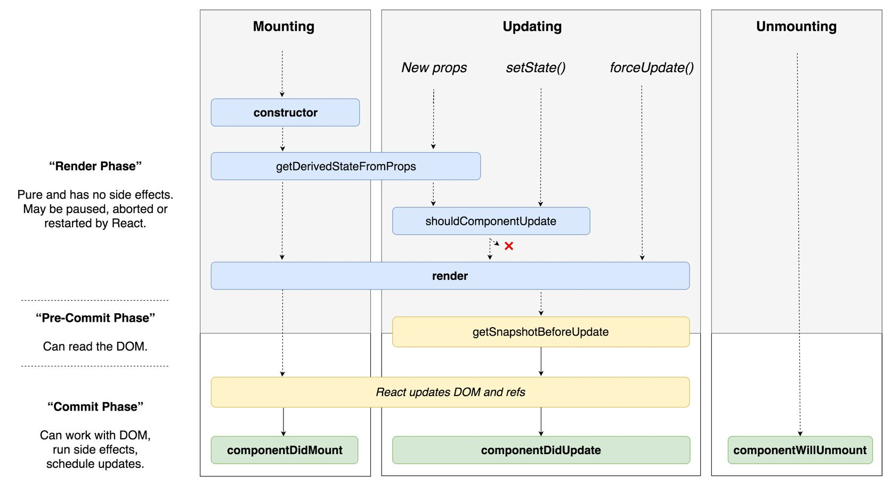

React Interview Questions & Answers
Core React
-
What is React?
React is an open-source frontend JavaScript library which is used for building user interfaces especially for single page applications. It is used for handling view layer for web and mobile apps. React was created by Jordan Walke, a software engineer working for Facebook. React was first deployed on Facebook’s News Feed in 2011 and on Instagram in 2012.
-
What are the major features of React?
The major features of React are:
- It uses VirtualDOM instead of RealDOM considering that RealDOM manipulations are expensive.
- Supports server-side rendering.
- Follows Unidirectional data flow or data binding.
- Uses reusable/composable UI components to develop the view.
-
What is JSX?
JSX is a XML-like syntax extension to ECMAScript (the acronym stands for JavaScript XML). Basically it just provides syntactic sugar for the
React.createElement()function, giving us expressiveness of JavaScript along with HTML like template syntax.In the example below text inside
<h1>tag is returned as JavaScript function to the render function.jsx harmony class App extends React.Component { render() { return( <div> <h1>{'Welcome to React world!'}</h1> </div> ) } } -
What is the difference between Element and Component?
An Element is a plain object describing what you want to appear on the screen in terms of the DOM nodes or other components. Elements can contain other Elements in their props. Creating a React element is cheap. Once an element is created, it is never mutated.
The object representation of React Element would be as follows:
const element = React.createElement( 'div', {id: 'login-btn'}, 'Login' )The above
React.createElement()function returns an object:{ type: 'div', props: { children: 'Login', id: 'login-btn' } }And finally it renders to the DOM using
ReactDOM.render():<div id='login-btn'>Login</div>Whereas a component can be declared in several different ways. It can be a class with a
render()method or it can be defined as a function. In either case, it takes props as an input, and returns a JSX tree as the output:const Button = ({ onLogin }) => <div id={'login-btn'} onClick={onLogin}>Login</div>Then JSX gets transpiled to a
React.createElement()function tree:const Button = ({ onLogin }) => React.createElement( 'div', { id: 'login-btn', onClick: onLogin }, 'Login' ) -
How to create components in React?
There are two possible ways to create a component.
-
Function Components: This is the simplest way to create a component. Those are pure JavaScript functions that accept props object as first parameter and return React elements:
```jsx harmony function Greeting({ message }) { return <h1>{
Hello, ${message}}</h1>} ```
-
Class Components: You can also use ES6 class to define a component. The above function component can be written as:
jsx harmony class Greeting extends React.Component { render() { return <h1>{`Hello, ${this.props.message}`}</h1> } }
-
-
When to use a Class Component over a Function Component?
If the component needs state or lifecycle methods then use class component otherwise use function component. However, from React 16.8 with the addition of Hooks, you could use state , lifecycle methods and other features that were only available in class component right in your function component.
-
What are Pure Components?
React.PureComponentis exactly the same asReact.Componentexcept that it handles theshouldComponentUpdate()method for you. When props or state changes, PureComponent will do a shallow comparison on both props and state. Component on the other hand won’t compare current props and state to next out of the box. Thus, the component will re-render by default whenevershouldComponentUpdateis called. -
What is state in React?
State of a component is an object that holds some information that may change over the lifetime of the component. We should always try to make our state as simple as possible and minimize the number of stateful components.
Let’s create a user component with message state,
```jsx harmony class User extends React.Component { constructor(props) { super(props)
this.state = { message: 'Welcome to React world' } }render() { return ( <div> <h1>{this.state.message}</h1> </div> ) } } ```

State is similar to props, but it is private and fully controlled by the component. i.e, It is not accessible to any other component til the owner component decides to pass it.
-
What are props in React?
Props are inputs to components. They are single values or objects containing a set of values that are passed to components on creation using a naming convention similar to HTML-tag attributes. They are data passed down from a parent component to a child component.
The primary purpose of props in React is to provide following component functionality:
- Pass custom data to your component.
- Trigger state changes.
- Use via
this.props.reactPropinside component’srender()method.
For example, let us create an element with
reactPropproperty:```jsx harmony <Element reactProp={‘1’} />
This `reactProp` (or whatever you came up with) name then becomes a property attached to React's native props object which originally already exists on all components created using React library.props.reactProp ```
-
What is the difference between state and props?
Both props and state are plain JavaScript objects. While both of them hold information that influences the output of render, they are different in their functionality with respect to component. Props get passed to the component similar to function parameters whereas state is managed within the component similar to variables declared within a function.
-
Why should we not update the state directly?
If you try to update state directly then it won’t re-render the component.
//Wrong this.state.message = 'Hello world'Instead use
setState()method. It schedules an update to a component’s state object. When state changes, the component responds by re-rendering.//Correct this.setState({ message: 'Hello World' })Note: You can directly assign to the state object either in constructor or using latest javascript’s class field declaration syntax.
-
What is the purpose of callback function as an argument of
setState()?The callback function is invoked when setState finished and the component gets rendered. Since
setState()is asynchronous the callback function is used for any post action.Note: It is recommended to use lifecycle method rather than this callback function.
setState({ name: 'John' }, () => console.log('The name has updated and component re-rendered')) -
What is the difference between HTML and React event handling?
Below are some of the main differences between HTML and React event handling,
-
In HTML, the event name usually represents in lowercase as a convention:
<button onclick='activateLasers()'>Whereas in React it follows camelCase convention:
jsx harmony <button onClick={activateLasers}> -
In HTML, you can return
falseto prevent default behavior:<a href='#' onclick='console.log("The link was clicked."); return false;' />Whereas in React you must call
preventDefault()explicitly:function handleClick(event) { event.preventDefault() console.log('The link was clicked.') } -
In HTML, you need to invoke the function by appending
()Whereas in react you should not append()with the function name. (refer “activateLasers” function in the first point for example)
-
-
How to bind methods or event handlers in JSX callbacks?
There are 3 possible ways to achieve this:
-
Binding in Constructor: In JavaScript classes, the methods are not bound by default. The same thing applies for React event handlers defined as class methods. Normally we bind them in constructor.
class Component extends React.Component { constructor(props) { super(props) this.handleClick = this.handleClick.bind(this) } handleClick() { // ... } } -
Public class fields syntax: If you don’t like to use bind approach then public class fields syntax can be used to correctly bind callbacks.
```jsx harmony handleClick = () => { console.log(‘this is:’, this) }
```jsx harmony <button onClick={this.handleClick}> {'Click me'} </button> -
Arrow functions in callbacks: You can use arrow functions directly in the callbacks.
jsx harmony <button onClick={(event) => this.handleClick(event)}> {'Click me'} </button>
Note: If the callback is passed as prop to child components, those components might do an extra re-rendering. In those cases, it is preferred to go with
.bind()or public class fields syntax approach considering performance. -
-
How to pass a parameter to an event handler or callback?
You can use an arrow function to wrap around an event handler and pass parameters:
```jsx harmony <button onClick={() => this.handleClick(id)} />
This is an equivalent to calling `.bind`: ```jsx harmony <button onClick={this.handleClick.bind(this, id)} />Apart from these two approaches, you can also pass arguments to a function which is defined as arrow function
jsx harmony <button onClick={this.handleClick(id)} /> handleClick = (id) => () => { console.log("Hello, your ticket number is", id) }; -
What are synthetic events in React?
SyntheticEventis a cross-browser wrapper around the browser’s native event. It’s API is same as the browser’s native event, includingstopPropagation()andpreventDefault(), except the events work identically across all browsers. -
What are inline conditional expressions?
You can use either if statements or ternary expressions which are available from JS to conditionally render expressions. Apart from these approaches, you can also embed any expressions in JSX by wrapping them in curly braces and then followed by JS logical operator
&&.```jsx harmony
Hello!
{ messages.length > 0 && !isLogin? <h2> You have {messages.length} unread messages. </h2> : <h2> You don’t have unread messages. </h2> } ```
-
What is “key” prop and what is the benefit of using it in arrays of elements?
A
keyis a special string attribute you should include when creating arrays of elements. Key prop helps React identify which items have changed, are added, or are removed.Most often we use ID from our data as key:
```jsx harmony const todoItems = todos.map((todo) => <li key={todo.id}> {todo.text} </li> )
When you don't have stable IDs for rendered items, you may use the item *index* as a *key* as a last resort: ```jsx harmony const todoItems = todos.map((todo, index) => <li key={index}> {todo.text} </li> )Note:
- Using indexes for keys is not recommended if the order of items may change. This can negatively impact performance and may cause issues with component state.
- If you extract list item as separate component then apply keys on list component instead of
litag. - There will be a warning message in the console if the
keyprop is not present on list items.
-
What is the use of refs?
The ref is used to return a reference to the element. They should be avoided in most cases, however, they can be useful when you need a direct access to the DOM element or an instance of a component.
-
How to create refs?
There are two approaches
-
This is a recently added approach. Refs are created using
React.createRef()method and attached to React elements via therefattribute. In order to use refs throughout the component, just assign the ref to the instance property within constructor.jsx harmony class MyComponent extends React.Component { constructor(props) { super(props) this.myRef = React.createRef() } render() { return <div ref={this.myRef} /> } } -
You can also use ref callbacks approach regardless of React version. For example, the search bar component’s input element accessed as follows,
jsx harmony class SearchBar extends Component { constructor(props) { super(props); this.txtSearch = null; this.state = { term: '' }; this.setInputSearchRef = e => { this.txtSearch = e; } } onInputChange(event) { this.setState({ term: this.txtSearch.value }); } render() { return ( <input value={this.state.term} onChange={this.onInputChange.bind(this)} ref={this.setInputSearchRef} /> ); } }
You can also use refs in function components using closures. Note: You can also use inline ref callbacks even though it is not a recommended approach
-
-
What are forward refs?
Ref forwarding is a feature that lets some components take a ref they receive, and pass it further down to a child.
```jsx harmony const ButtonElement = React.forwardRef((props, ref) => ( <button ref={ref} className=”CustomButton”> {props.children} </button> ));
// Create ref to the DOM button: const ref = React.createRef(); <ButtonElement ref={ref}>{‘Forward Ref’}</ButtonElement> ```
-
Which is preferred option with in callback refs and findDOMNode()?
It is preferred to use callback refs over
findDOMNode()API. BecausefindDOMNode()prevents certain improvements in React in the future.The legacy approach of using
findDOMNode:class MyComponent extends Component { componentDidMount() { findDOMNode(this).scrollIntoView() } render() { return <div /> } }The recommended approach is:
class MyComponent extends Component { constructor(props){ super(props); this.node = createRef(); } componentDidMount() { this.node.current.scrollIntoView(); } render() { return <div ref={this.node} /> } } -
Why are String Refs legacy?
If you worked with React before, you might be familiar with an older API where the
refattribute is a string, likeref={'textInput'}, and the DOM node is accessed asthis.refs.textInput. We advise against it because string refs have below issues, and are considered legacy. String refs were removed in React v16.- They force React to keep track of currently executing component. This is problematic because it makes react module stateful, and thus causes weird errors when react module is duplicated in the bundle.
- They are not composable — if a library puts a ref on the passed child, the user can’t put another ref on it. Callback refs are perfectly composable.
- They don’t work with static analysis like Flow. Flow can’t guess the magic that framework does to make the string ref appear on
this.refs, as well as its type (which could be different). Callback refs are friendlier to static analysis. -
It doesn’t work as most people would expect with the “render callback” pattern (e.g. <DataGrid renderRow={this.renderRow} />) ```jsx harmony class MyComponent extends Component { renderRow = (index) => { // This won’t work. Ref will get attached to DataTable rather than MyComponent: return <input ref={‘input-‘ + index} />;
// This would work though! Callback refs are awesome. return <input ref={input => this['input-' + index] = input} />; }render() { return <DataTable data={this.props.data} renderRow={this.renderRow} /> } } ```
-
What is Virtual DOM?
The Virtual DOM (VDOM) is an in-memory representation of Real DOM. The representation of a UI is kept in memory and synced with the “real” DOM. It’s a step that happens between the render function being called and the displaying of elements on the screen. This entire process is called reconciliation.
-
How Virtual DOM works?
The Virtual DOM works in three simple steps.
-
Whenever any underlying data changes, the entire UI is re-rendered in Virtual DOM representation.

-
Then the difference between the previous DOM representation and the new one is calculated.

-
Once the calculations are done, the real DOM will be updated with only the things that have actually changed.

-
-
What is the difference between Shadow DOM and Virtual DOM?
The Shadow DOM is a browser technology designed primarily for scoping variables and CSS in web components. The Virtual DOM is a concept implemented by libraries in JavaScript on top of browser APIs.
-
What is React Fiber?
Fiber is the new reconciliation engine or reimplementation of core algorithm in React v16. The goal of React Fiber is to increase its suitability for areas like animation, layout, gestures, ability to pause, abort, or reuse work and assign priority to different types of updates; and new concurrency primitives.
-
What is the main goal of React Fiber?
The goal of React Fiber is to increase its suitability for areas like animation, layout, and gestures. Its headline feature is incremental rendering: the ability to split rendering work into chunks and spread it out over multiple frames.
from documentation
Its main goals are:
- Ability to split interruptible work in chunks.
- Ability to prioritize, rebase and reuse work in progress.
- Ability to yield back and forth between parents and children to support layout in React.
- Ability to return multiple elements from render().
- Better support for error boundaries.
-
What are controlled components?
A component that controls the input elements within the forms on subsequent user input is called Controlled Component, i.e, every state mutation will have an associated handler function.
For example, to write all the names in uppercase letters, we use handleChange as below,
handleChange(event) { this.setState({value: event.target.value.toUpperCase()}) } -
What are uncontrolled components?
The Uncontrolled Components are the ones that store their own state internally, and you query the DOM using a ref to find its current value when you need it. This is a bit more like traditional HTML.
In the below UserProfile component, the
nameinput is accessed using ref.```jsx harmony class UserProfile extends React.Component { constructor(props) { super(props) this.handleSubmit = this.handleSubmit.bind(this) this.input = React.createRef() }
handleSubmit(event) { alert(‘A name was submitted: ‘ + this.input.current.value) event.preventDefault() }
render() { return ( <form onSubmit={this.handleSubmit}> </form> ); } } ```
In most cases, it’s recommend to use controlled components to implement forms.
-
What is the difference between createElement and cloneElement?
JSX elements will be transpiled to
React.createElement()functions to create React elements which are going to be used for the object representation of UI. WhereascloneElementis used to clone an element and pass it new props. -
What is Lifting State Up in React?
When several components need to share the same changing data then it is recommended to lift the shared state up to their closest common ancestor. That means if two child components share the same data from its parent, then move the state to parent instead of maintaining local state in both of the child components.
-
What are the different phases of component lifecycle?
The component lifecycle has three distinct lifecycle phases:
-
Mounting: The component is ready to mount in the browser DOM. This phase covers initialization from
constructor(),getDerivedStateFromProps(),render(), andcomponentDidMount()lifecycle methods. -
Updating: In this phase, the component get updated in two ways, sending the new props and updating the state either from
setState()orforceUpdate(). This phase coversgetDerivedStateFromProps(),shouldComponentUpdate(),render(),getSnapshotBeforeUpdate()andcomponentDidUpdate()lifecycle methods. -
Unmounting: In this last phase, the component is not needed and get unmounted from the browser DOM. This phase includes
componentWillUnmount()lifecycle method.
It’s worth mentioning that React internally has a concept of phases when applying changes to the DOM. They are separated as follows
-
Render The component will render without any side-effects. This applies for Pure components and in this phase, React can pause, abort, or restart the render.
-
Pre-commit Before the component actually applies the changes to the DOM, there is a moment that allows React to read from the DOM through the
getSnapshotBeforeUpdate(). -
Commit React works with the DOM and executes the final lifecycles respectively
componentDidMount()for mounting,componentDidUpdate()for updating, andcomponentWillUnmount()for unmounting.
React 16.3+ Phases (or an interactive version)

Before React 16.3

-
-
What are the lifecycle methods of React?
Before React 16.3
- componentWillMount: Executed before rendering and is used for App level configuration in your root component.
- componentDidMount: Executed after first rendering and here all AJAX requests, DOM or state updates, and set up event listeners should occur.
- componentWillReceiveProps: Executed when particular prop updates to trigger state transitions.
- shouldComponentUpdate: Determines if the component will be updated or not. By default it returns
true. If you are sure that the component doesn’t need to render after state or props are updated, you can return false value. It is a great place to improve performance as it allows you to prevent a re-render if component receives new prop. - componentWillUpdate: Executed before re-rendering the component when there are props & state changes confirmed by
shouldComponentUpdate()which returns true. - componentDidUpdate: Mostly it is used to update the DOM in response to prop or state changes.
- componentWillUnmount: It will be used to cancel any outgoing network requests, or remove all event listeners associated with the component.
React 16.3+
- getDerivedStateFromProps: Invoked right before calling
render()and is invoked on every render. This exists for rare use cases where you need derived state. Worth reading if you need derived state. - componentDidMount: Executed after first rendering and where all AJAX requests, DOM or state updates, and set up event listeners should occur.
- shouldComponentUpdate: Determines if the component will be updated or not. By default it returns
true. If you are sure that the component doesn’t need to render after state or props are updated, you can return false value. It is a great place to improve performance as it allows you to prevent a re-render if component receives new prop. - getSnapshotBeforeUpdate: Executed right before rendered output is committed to the DOM. Any value returned by this will be passed into
componentDidUpdate(). This is useful to capture information from the DOM i.e. scroll position. - componentDidUpdate: Mostly it is used to update the DOM in response to prop or state changes. This will not fire if
shouldComponentUpdate()returnsfalse. - componentWillUnmount It will be used to cancel any outgoing network requests, or remove all event listeners associated with the component.
-
What are Higher-Order Components?
A higher-order component (HOC) is a function that takes a component and returns a new component. Basically, it’s a pattern that is derived from React’s compositional nature.
We call them pure components because they can accept any dynamically provided child component but they won’t modify or copy any behavior from their input components.
const EnhancedComponent = higherOrderComponent(WrappedComponent)HOC can be used for many use cases:
- Code reuse, logic and bootstrap abstraction.
- Render hijacking.
- State abstraction and manipulation.
- Props manipulation.
-
How to create props proxy for HOC component?
You can add/edit props passed to the component using props proxy pattern like this:
```jsx harmony function HOC(WrappedComponent) { return class Test extends Component { render() { const newProps = { title: ‘New Header’, footer: false, showFeatureX: false, showFeatureY: true }
return <WrappedComponent {...this.props} {...newProps} /> } } } ``` -
What is context?
Context provides a way to pass data through the component tree without having to pass props down manually at every level.
For example, authenticated user, locale preference, UI theme need to be accessed in the application by many components.
const {Provider, Consumer} = React.createContext(defaultValue) -
What is children prop?
Children is a prop (
this.props.children) that allow you to pass components as data to other components, just like any other prop you use. Component tree put between component’s opening and closing tag will be passed to that component aschildrenprop.There are a number of methods available in the React API to work with this prop. These include
React.Children.map,React.Children.forEach,React.Children.count,React.Children.only,React.Children.toArray.A simple usage of children prop looks as below,
```jsx harmony const MyDiv = React.createClass({ render: function() { return <div>{this.props.children}</div> } })
ReactDOM.render(
{'Hello'} {'World'} , node ) ```
-
How to write comments in React?
The comments in React/JSX are similar to JavaScript Multiline comments but are wrapped in curly braces.
Single-line comments:
```jsx harmony
{/* Single-line comments(In vanilla JavaScript, the single-line comments are represented by double slash(//)) */} {`Welcome ${user}, let's play React`}**Multi-line comments:** ```jsx harmony <div> {/* Multi-line comments for more than one line */} {`Welcome ${user}, let's play React`} </div> -
What is the purpose of using super constructor with props argument?
A child class constructor cannot make use of
thisreference untilsuper()method has been called. The same applies for ES6 sub-classes as well. The main reason of passing props parameter tosuper()call is to accessthis.propsin your child constructors.Passing props:
class MyComponent extends React.Component { constructor(props) { super(props) console.log(this.props) // prints { name: 'John', age: 42 } } }Not passing props:
class MyComponent extends React.Component { constructor(props) { super() console.log(this.props) // prints undefined // but props parameter is still available console.log(props) // prints { name: 'John', age: 42 } } render() { // no difference outside constructor console.log(this.props) // prints { name: 'John', age: 42 } } }The above code snippets reveals that
this.propsis different only within the constructor. It would be the same outside the constructor. -
What is reconciliation?
When a component’s props or state change, React decides whether an actual DOM update is necessary by comparing the newly returned element with the previously rendered one. When they are not equal, React will update the DOM. This process is called reconciliation.
-
How to set state with a dynamic key name?
If you are using ES6 or the Babel transpiler to transform your JSX code then you can accomplish this with computed property names.
handleInputChange(event) { this.setState({ [event.target.id]: event.target.value }) } -
What would be the common mistake of function being called every time the component renders?
You need to make sure that function is not being called while passing the function as a parameter.
```jsx harmony render() { // Wrong: handleClick is called instead of passed as a reference! return <button onClick={this.handleClick()}>{‘Click Me’}</button> }
Instead, pass the function itself without parenthesis: ```jsx harmony render() { // Correct: handleClick is passed as a reference! return <button onClick={this.handleClick}>{'Click Me'}</button> } -
Is lazy function supports named exports?
No, currently
React.lazyfunction supports default exports only. If you would like to import modules which are named exports, you can create an intermediate module that reexports it as the default. It also ensures that tree shaking keeps working and don’t pull unused components. Let’s take a component file which exports multiple named components,// MoreComponents.js export const SomeComponent = /* ... */; export const UnusedComponent = /* ... */;and reexport
MoreComponents.jscomponents in an intermediate fileIntermediateComponent.js// IntermediateComponent.js export { SomeComponent as default } from "./MoreComponents.js";Now you can import the module using lazy function as below,
import React, { lazy } from 'react'; const SomeComponent = lazy(() => import("./IntermediateComponent.js")); -
Why React uses
classNameoverclassattribute?classis a keyword in JavaScript, and JSX is an extension of JavaScript. That’s the principal reason why React usesclassNameinstead ofclass. Pass a string as theclassNameprop.jsx harmony render() { return <span className={'menu navigation-menu'}>{'Menu'}</span> } -
What are fragments?
It’s common pattern in React which is used for a component to return multiple elements. Fragments let you group a list of children without adding extra nodes to the DOM.
```jsx harmony render() { return (
There is also a *shorter syntax*, but it's not supported in many tools: ```jsx harmony render() { return ( <> <ChildA /> <ChildB /> <ChildC /> </> ) } -
Why fragments are better than container divs?
Below are the list of reasons,
- Fragments are a bit faster and use less memory by not creating an extra DOM node. This only has a real benefit on very large and deep trees.
- Some CSS mechanisms like Flexbox and CSS Grid have a special parent-child relationships, and adding divs in the middle makes it hard to keep the desired layout.
- The DOM Inspector is less cluttered.
-
What are portals in React?
Portal is a recommended way to render children into a DOM node that exists outside the DOM hierarchy of the parent component.
ReactDOM.createPortal(child, container)The first argument is any render-able React child, such as an element, string, or fragment. The second argument is a DOM element.
-
What are stateless components?
If the behaviour is independent of its state then it can be a stateless component. You can use either a function or a class for creating stateless components. But unless you need to use a lifecycle hook in your components, you should go for function components. There are a lot of benefits if you decide to use function components here; they are easy to write, understand, and test, a little faster, and you can avoid the
thiskeyword altogether. -
What are stateful components?
If the behaviour of a component is dependent on the state of the component then it can be termed as stateful component. These stateful components are always class components and have a state that gets initialized in the
constructor.class App extends Component { constructor(props) { super(props) this.state = { count: 0 } } render() { // ... } }React 16.8 Update:
Hooks let you use state and other React features without writing classes.
The Equivalent Functional Component
import React, {useState} from 'react'; const App = (props) => { const [count, setCount] = useState(0); return ( // JSX ) } -
How to apply validation on props in React?
When the application is running in development mode, React will automatically check all props that we set on components to make sure they have correct type. If the type is incorrect, React will generate warning messages in the console. It’s disabled in production mode due to performance impact. The mandatory props are defined with
isRequired.The set of predefined prop types:
PropTypes.numberPropTypes.stringPropTypes.arrayPropTypes.objectPropTypes.funcPropTypes.nodePropTypes.elementPropTypes.boolPropTypes.symbolPropTypes.any
We can define
propTypesforUsercomponent as below:```jsx harmony import React from ‘react’ import PropTypes from ‘prop-types’
class User extends React.Component { static propTypes = { name: PropTypes.string.isRequired, age: PropTypes.number.isRequired }
render() { return ( <> <h1>{
Welcome, ${this.props.name}}</h1> <h2>{Age, ${this.props.age}}</h2> </> ) } }**Note:** In React v15.5 *PropTypes* were moved from `React.PropTypes` to `prop-types` library. *The Equivalent Functional Component* ```jsx harmony import React from 'react' import PropTypes from 'prop-types' function User() { return ( <> <h1>{`Welcome, ${this.props.name}`}</h1> <h2>{`Age, ${this.props.age}`}</h2> </> ) } User.propTypes = { name: PropTypes.string.isRequired, age: PropTypes.number.isRequired } -
What are the advantages of React?
Below are the list of main advantages of React,
- Increases the application’s performance with Virtual DOM.
- JSX makes code easy to read and write.
- It renders both on client and server side (SSR).
- Easy to integrate with frameworks (Angular, Backbone) since it is only a view library.
- Easy to write unit and integration tests with tools such as Jest.
-
What are the limitations of React?
Apart from the advantages, there are few limitations of React too,
- React is just a view library, not a full framework.
- There is a learning curve for beginners who are new to web development.
- Integrating React into a traditional MVC framework requires some additional configuration.
- The code complexity increases with inline templating and JSX.
- Too many smaller components leading to over engineering or boilerplate.
-
What are error boundaries in React v16?
Error boundaries are components that catch JavaScript errors anywhere in their child component tree, log those errors, and display a fallback UI instead of the component tree that crashed.
A class component becomes an error boundary if it defines a new lifecycle method called
componentDidCatch(error, info)orstatic getDerivedStateFromError():```jsx harmony class ErrorBoundary extends React.Component { constructor(props) { super(props) this.state = { hasError: false } }
componentDidCatch(error, info) { // You can also log the error to an error reporting service logErrorToMyService(error, info) }
static getDerivedStateFromError(error) { // Update state so the next render will show the fallback UI. return { hasError: true }; }
render() { if (this.state.hasError) { // You can render any custom fallback UI return <h1>{‘Something went wrong.’}</h1> } return this.props.children } }
After that use it as a regular component: ```jsx harmony <ErrorBoundary> <MyWidget /> </ErrorBoundary> -
How error boundaries handled in React v15?
React v15 provided very basic support for error boundaries using
unstable_handleErrormethod. It has been renamed tocomponentDidCatchin React v16. -
What are the recommended ways for static type checking?
Normally we use PropTypes library (
React.PropTypesmoved to aprop-typespackage since React v15.5) for type checking in the React applications. For large code bases, it is recommended to use static type checkers such as Flow or TypeScript, that perform type checking at compile time and provide auto-completion features. -
What is the use of
react-dompackage?The
react-dompackage provides DOM-specific methods that can be used at the top level of your app. Most of the components are not required to use this module. Some of the methods of this package are:render()hydrate()unmountComponentAtNode()findDOMNode()createPortal()
-
What is the purpose of render method of
react-dom?This method is used to render a React element into the DOM in the supplied container and return a reference to the component. If the React element was previously rendered into container, it will perform an update on it and only mutate the DOM as necessary to reflect the latest changes.
ReactDOM.render(element, container[, callback])If the optional callback is provided, it will be executed after the component is rendered or updated.
-
What is ReactDOMServer?
The
ReactDOMServerobject enables you to render components to static markup (typically used on node server). This object is mainly used for server-side rendering (SSR). The following methods can be used in both the server and browser environments:renderToString()renderToStaticMarkup()
For example, you generally run a Node-based web server like Express, Hapi, or Koa, and you call
renderToStringto render your root component to a string, which you then send as response.// using Express import { renderToString } from 'react-dom/server' import MyPage from './MyPage' app.get('/', (req, res) => { res.write('<!DOCTYPE html><html><head><title>My Page</title></head><body>') res.write('<div id="content">') res.write(renderToString(<MyPage/>)) res.write('</div></body></html>') res.end() }) -
How to use innerHTML in React?
The
dangerouslySetInnerHTMLattribute is React’s replacement for usinginnerHTMLin the browser DOM. Just likeinnerHTML, it is risky to use this attribute considering cross-site scripting (XSS) attacks. You just need to pass a__htmlobject as key and HTML text as value.In this example MyComponent uses
dangerouslySetInnerHTMLattribute for setting HTML markup:```jsx harmony function createMarkup() { return { __html: ‘First · Second’ } }
function MyComponent() { return <div dangerouslySetInnerHTML={createMarkup()} /> } ```
-
How to use styles in React?
The
styleattribute accepts a JavaScript object with camelCased properties rather than a CSS string. This is consistent with the DOM style JavaScript property, is more efficient, and prevents XSS security holes.```jsx harmony const divStyle = { color: ‘blue’, backgroundImage: ‘url(‘ + imgUrl + ‘)’ };
function HelloWorldComponent() { return <div style={divStyle}>Hello World!</div> } ```
Style keys are camelCased in order to be consistent with accessing the properties on DOM nodes in JavaScript (e.g.
node.style.backgroundImage). -
How events are different in React?
Handling events in React elements has some syntactic differences:
- React event handlers are named using camelCase, rather than lowercase.
- With JSX you pass a function as the event handler, rather than a string.
-
What will happen if you use
setState()in constructor?When you use
setState(), then apart from assigning to the object state React also re-renders the component and all its children. You would get error like this: Can only update a mounted or mounting component. So we need to usethis.stateto initialize variables inside constructor. -
What is the impact of indexes as keys?
Keys should be stable, predictable, and unique so that React can keep track of elements.
In the below code snippet each element’s key will be based on ordering, rather than tied to the data that is being represented. This limits the optimizations that React can do.
```jsx harmony {todos.map((todo, index) => <Todo {…todo} key={index} /> )}
If you use element data for unique key, assuming todo.id is unique to this list and stable, React would be able to reorder elements without needing to reevaluate them as much. ```jsx harmony {todos.map((todo) => <Todo {...todo} key={todo.id} /> )} -
Is it good to use
setState()incomponentWillMount()method?Yes, it is safe to use
setState()insidecomponentWillMount()method. But at the same it is recommended to avoid async initialization incomponentWillMount()lifecycle method.componentWillMount()is invoked immediately before mounting occurs. It is called beforerender(), therefore setting state in this method will not trigger a re-render. Avoid introducing any side-effects or subscriptions in this method. We need to make sure async calls for component initialization happened incomponentDidMount()instead ofcomponentWillMount().jsx harmony componentDidMount() { axios.get(`api/todos`) .then((result) => { this.setState({ messages: [...result.data] }) }) } -
What will happen if you use props in initial state?
If the props on the component are changed without the component being refreshed, the new prop value will never be displayed because the constructor function will never update the current state of the component. The initialization of state from props only runs when the component is first created.
The below component won’t display the updated input value:
```jsx harmony class MyComponent extends React.Component { constructor(props) { super(props)
this.state = { records: [], inputValue: this.props.inputValue }; }render() { return <div>{this.state.inputValue}</div> } }
Using props inside render method will update the value: ```jsx harmony class MyComponent extends React.Component { constructor(props) { super(props) this.state = { record: [] } } render() { return <div>{this.props.inputValue}</div> } } -
How do you conditionally render components?
In some cases you want to render different components depending on some state. JSX does not render
falseorundefined, so you can use conditional short-circuiting to render a given part of your component only if a certain condition is true.```jsx harmony const MyComponent = ({ name, address }) => (
{name}
{address &&{address}
})
If you need an `if-else` condition then use *ternary operator*. ```jsx harmony const MyComponent = ({ name, address }) => ( <div> <h2>{name}</h2> {address ? <p>{address}</p> : <p>{'Address is not available'}</p> } </div> ) -
Why we need to be careful when spreading props on DOM elements?
When we spread props we run into the risk of adding unknown HTML attributes, which is a bad practice. Instead we can use prop destructuring with
...restoperator, so it will add only required props.For example,
```jsx harmony const ComponentA = () => <ComponentB isDisplay={true} className={‘componentStyle’} />
const ComponentB = ({ isDisplay, …domProps }) => <div {…domProps}>{‘ComponentB’}</div> ```
-
How you use decorators in React?
You can decorate your class components, which is the same as passing the component into a function. Decorators are flexible and readable way of modifying component functionality.
```jsx harmony @setTitle(‘Profile’) class Profile extends React.Component { //…. }
/* title is a string that will be set as a document title WrappedComponent is what our decorator will receive when put directly above a component class as seen in the example above */ const setTitle = (title) => (WrappedComponent) => { return class extends React.Component { componentDidMount() { document.title = title }
render() { return <WrappedComponent {...this.props} /> } } } ```Note: Decorators are a feature that didn’t make it into ES7, but are currently a stage 2 proposal.
-
How do you memoize a component?
There are memoize libraries available which can be used on function components.
For example
moizelibrary can memoize the component in another component.```jsx harmony import moize from ‘moize’ import Component from ‘./components/Component’ // this module exports a non-memoized component
const MemoizedFoo = moize.react(Component)
const Consumer = () => {
{'I will memoize the following entry:'}}
**Update:** Since React v16.6.0, we have a `React.memo`. It provides a higher order component which memoizes component unless the props change. To use it, simply wrap the component using React.memo before you use it. ```js const MemoComponent = React.memo(function MemoComponent(props) { /* render using props */ }); OR export default React.memo(MyFunctionComponent); -
How you implement Server Side Rendering or SSR?
React is already equipped to handle rendering on Node servers. A special version of the DOM renderer is available, which follows the same pattern as on the client side.
```jsx harmony import ReactDOMServer from ‘react-dom/server’ import App from ‘./App’
ReactDOMServer.renderToString(
) ``` This method will output the regular HTML as a string, which can be then placed inside a page body as part of the server response. On the client side, React detects the pre-rendered content and seamlessly picks up where it left off.
-
How to enable production mode in React?
You should use Webpack’s
DefinePluginmethod to setNODE_ENVtoproduction, by which it strip out things like propType validation and extra warnings. Apart from this, if you minify the code, for example, Uglify’s dead-code elimination to strip out development only code and comments, it will drastically reduce the size of your bundle. -
What is CRA and its benefits?
The
create-react-appCLI tool allows you to quickly create & run React applications with no configuration step.Let’s create Todo App using CRA:
# Installation $ npm install -g create-react-app # Create new project $ create-react-app todo-app $ cd todo-app # Build, test and run $ npm run build $ npm run test $ npm startIt includes everything we need to build a React app:
- React, JSX, ES6, and Flow syntax support.
- Language extras beyond ES6 like the object spread operator.
- Autoprefixed CSS, so you don’t need -webkit- or other prefixes.
- A fast interactive unit test runner with built-in support for coverage reporting.
- A live development server that warns about common mistakes.
- A build script to bundle JS, CSS, and images for production, with hashes and sourcemaps.
-
What is the lifecycle methods order in mounting?
The lifecycle methods are called in the following order when an instance of a component is being created and inserted into the DOM.
constructor()static getDerivedStateFromProps()render()componentDidMount()
-
What are the lifecycle methods going to be deprecated in React v16?
The following lifecycle methods going to be unsafe coding practices and will be more problematic with async rendering.
componentWillMount()componentWillReceiveProps()componentWillUpdate()
Starting with React v16.3 these methods are aliased with
UNSAFE_prefix, and the unprefixed version will be removed in React v17. -
What is the purpose of
getDerivedStateFromProps()lifecycle method?The new static
getDerivedStateFromProps()lifecycle method is invoked after a component is instantiated as well as before it is re-rendered. It can return an object to update state, ornullto indicate that the new props do not require any state updates.class MyComponent extends React.Component { static getDerivedStateFromProps(props, state) { // ... } }This lifecycle method along with
componentDidUpdate()covers all the use cases ofcomponentWillReceiveProps(). -
What is the purpose of
getSnapshotBeforeUpdate()lifecycle method?The new
getSnapshotBeforeUpdate()lifecycle method is called right before DOM updates. The return value from this method will be passed as the third parameter tocomponentDidUpdate().class MyComponent extends React.Component { getSnapshotBeforeUpdate(prevProps, prevState) { // ... } }This lifecycle method along with
componentDidUpdate()covers all the use cases ofcomponentWillUpdate(). -
Do Hooks replace render props and higher order components?
Both render props and higher-order components render only a single child but in most of the cases Hooks are a simpler way to serve this by reducing nesting in your tree.
-
What is the recommended way for naming components?
It is recommended to name the component by reference instead of using
displayName.Using
displayNamefor naming component:export default React.createClass({ displayName: 'TodoApp', // ... })The recommended approach:
export default class TodoApp extends React.Component { // ... } -
What is the recommended ordering of methods in component class?
Recommended ordering of methods from mounting to render stage:
staticmethodsconstructor()getChildContext()componentWillMount()componentDidMount()componentWillReceiveProps()shouldComponentUpdate()componentWillUpdate()componentDidUpdate()componentWillUnmount()- click handlers or event handlers like
onClickSubmit()oronChangeDescription() - getter methods for render like
getSelectReason()orgetFooterContent() - optional render methods like
renderNavigation()orrenderProfilePicture() render()
-
What is a switching component?
A switching component is a component that renders one of many components. We need to use object to map prop values to components.
For example, a switching component to display different pages based on
pageprop:```jsx harmony import HomePage from ‘./HomePage’ import AboutPage from ‘./AboutPage’ import ServicesPage from ‘./ServicesPage’ import ContactPage from ‘./ContactPage’
const PAGES = { home: HomePage, about: AboutPage, services: ServicesPage, contact: ContactPage }
const Page = (props) => { const Handler = PAGES[props.page] || ContactPage
return <Handler {…props} /> }
// The keys of the PAGES object can be used in the prop types to catch dev-time errors. Page.propTypes = { page: PropTypes.oneOf(Object.keys(PAGES)).isRequired } ```
-
Why we need to pass a function to setState()?
The reason behind for this is that
setState()is an asynchronous operation. React batches state changes for performance reasons, so the state may not change immediately aftersetState()is called. That means you should not rely on the current state when callingsetState()since you can’t be sure what that state will be. The solution is to pass a function tosetState(), with the previous state as an argument. By doing this you can avoid issues with the user getting the old state value on access due to the asynchronous nature ofsetState().Let’s say the initial count value is zero. After three consecutive increment operations, the value is going to be incremented only by one.
// assuming this.state.count === 0 this.setState({ count: this.state.count + 1 }) this.setState({ count: this.state.count + 1 }) this.setState({ count: this.state.count + 1 }) // this.state.count === 0, not 3If we pass a function to
setState(), the count gets incremented correctly.this.setState((prevState, props) => ({ count: prevState.count + props.increment })) // this.state.count === 3 as expected(OR)
Why function is preferred over object for
setState()?React may batch multiple
setState()calls into a single update for performance. Becausethis.propsandthis.statemay be updated asynchronously, you should not rely on their values for calculating the next state.This counter example will fail to update as expected:
// Wrong this.setState({ counter: this.state.counter + this.props.increment, })The preferred approach is to call
setState()with function rather than object. That function will receive the previous state as the first argument, and the props at the time the update is applied as the second argument.// Correct this.setState((prevState, props) => ({ counter: prevState.counter + props.increment })) -
What is strict mode in React?
React.StrictModeis a useful component for highlighting potential problems in an application. Just like<Fragment>,<StrictMode>does not render any extra DOM elements. It activates additional checks and warnings for its descendants. These checks apply for development mode only.```jsx harmony import React from ‘react’
function ExampleApplication() { return ( <div> <Header />
<div> <Header /> </div> ) } ```</div> In the example above, the strict mode checks apply to
<ComponentOne>and<ComponentTwo>components only. -
What are React Mixins?
Mixins are a way to totally separate components to have a common functionality. Mixins should not be used and can be replaced with higher-order components or decorators.
One of the most commonly used mixins is
PureRenderMixin. You might be using it in some components to prevent unnecessary re-renders when the props and state are shallowly equal to the previous props and state:const PureRenderMixin = require('react-addons-pure-render-mixin') const Button = React.createClass({ mixins: [PureRenderMixin], // ... }) -
Why is
isMounted()an anti-pattern and what is the proper solution?The primary use case for
isMounted()is to avoid callingsetState()after a component has been unmounted, because it will emit a warning.if (this.isMounted()) { this.setState({...}) }Checking
isMounted()before callingsetState()does eliminate the warning, but it also defeats the purpose of the warning. UsingisMounted()is a code smell because the only reason you would check is because you think you might be holding a reference after the component has unmounted.An optimal solution would be to find places where
setState()might be called after a component has unmounted, and fix them. Such situations most commonly occur due to callbacks, when a component is waiting for some data and gets unmounted before the data arrives. Ideally, any callbacks should be canceled incomponentWillUnmount(), prior to unmounting. -
What are the Pointer Events supported in React?
Pointer Events provide a unified way of handling all input events. In the old days we had a mouse and respective event listeners to handle them but nowadays we have many devices which don’t correlate to having a mouse, like phones with touch surface or pens. We need to remember that these events will only work in browsers that support the Pointer Events specification.
The following event types are now available in React DOM:
onPointerDownonPointerMoveonPointerUponPointerCancelonGotPointerCaptureonLostPointerCaptureonPointerEnteronPointerLeaveonPointerOveronPointerOut
-
Why should component names start with capital letter?
If you are rendering your component using JSX, the name of that component has to begin with a capital letter otherwise React will throw an error as unrecognized tag. This convention is because only HTML elements and SVG tags can begin with a lowercase letter. ```jsx harmony class SomeComponent extends Component { // Code goes here }
You can define component class which name starts with lowercase letter, but when it's imported it should have capital letter. Here lowercase is fine: ```jsx harmony class myComponent extends Component { render() { return <div /> } } export default myComponentWhile when imported in another file it should start with capital letter:
```jsx harmony import MyComponent from ‘./MyComponent’
#### What are the exceptions on React component naming? The component names should start with a uppercase letter but there are few exceptions on this convention. The lowercase tag names with a dot (property accessors) are still considered as valid component names. For example the below tag can be compiled to a valid component, ```jsx harmony render() { return ( <obj.component/> // `React.createElement(obj.component)` ) } -
Are custom DOM attributes supported in React v16?
Yes. In the past, React used to ignore unknown DOM attributes. If you wrote JSX with an attribute that React doesn’t recognize, React would just skip it.
For example, let’s take a look at the below attribute:
```jsx harmony <div mycustomattribute={‘something’} />
Would render an empty div to the DOM with React v15: ```html <div />In React v16 any unknown attributes will end up in the DOM:
<div mycustomattribute='something' />This is useful for supplying browser-specific non-standard attributes, trying new DOM APIs, and integrating with opinionated third-party libraries.
-
What is the difference between constructor and getInitialState?
You should initialize state in the constructor when using ES6 classes, and
getInitialState()method when usingReact.createClass().Using ES6 classes:
class MyComponent extends React.Component { constructor(props) { super(props) this.state = { /* initial state */ } } }Using
React.createClass():const MyComponent = React.createClass({ getInitialState() { return { /* initial state */ } } })Note:
React.createClass()is deprecated and removed in React v16. Use plain JavaScript classes instead. -
Can you force a component to re-render without calling setState?
By default, when your component’s state or props change, your component will re-render. If your
render()method depends on some other data, you can tell React that the component needs re-rendering by callingforceUpdate().component.forceUpdate(callback)It is recommended to avoid all uses of
forceUpdate()and only read fromthis.propsandthis.stateinrender(). -
What is the difference between
super()andsuper(props)in React using ES6 classes?When you want to access
this.propsinconstructor()then you should pass props tosuper()method.Using
super(props):class MyComponent extends React.Component { constructor(props) { super(props) console.log(this.props) // { name: 'John', ... } } }Using
super():class MyComponent extends React.Component { constructor(props) { super() console.log(this.props) // undefined } }Outside
constructor()both will display same value forthis.props. -
How to loop inside JSX?
You can simply use
Array.prototype.mapwith ES6 arrow function syntax.For example, the
itemsarray of objects is mapped into an array of components:```jsx harmony
{items.map(item => <SomeComponent key={item.id} name={item.name} />)}But you can't iterate using `for` loop: ```jsx harmony <tbody> for (let i = 0; i < items.length; i++) { <SomeComponent key={items[i].id} name={items[i].name} /> } </tbody>This is because JSX tags are transpiled into function calls, and you can’t use statements inside expressions. This may change thanks to
doexpressions which are stage 1 proposal. -
How do you access props in attribute quotes?
React (or JSX) doesn’t support variable interpolation inside an attribute value. The below representation won’t work:
```jsx harmony
But you can put any JS expression inside curly braces as the entire attribute value. So the below expression works: ```jsx harmony <img className='image' src={'media/' + this.props.image} />Using template strings will also work:
jsx harmony <img className='image' src={`media/${this.props.image}`} /> -
What is React proptype array with shape?
If you want to pass an array of objects to a component with a particular shape then use
React.PropTypes.shape()as an argument toReact.PropTypes.arrayOf().ReactComponent.propTypes = { arrayWithShape: React.PropTypes.arrayOf(React.PropTypes.shape({ color: React.PropTypes.string.isRequired, fontSize: React.PropTypes.number.isRequired })).isRequired } -
How to conditionally apply class attributes?
You shouldn’t use curly braces inside quotes because it is going to be evaluated as a string.
```jsx harmony
``` Instead you need to move curly braces outside (don't forget to include spaces between class names): ```jsx harmony <div className={'btn-panel ' + (this.props.visible ? 'show' : 'hidden')}> ``` *Template strings* will also work: ```jsx harmony <div className={`btn-panel ${this.props.visible ? 'show' : 'hidden'}`}> ``` -
What is the difference between React and ReactDOM?
The
reactpackage containsReact.createElement(),React.Component,React.Children, and other helpers related to elements and component classes. You can think of these as the isomorphic or universal helpers that you need to build components. Thereact-dompackage containsReactDOM.render(), and inreact-dom/serverwe have server-side rendering support withReactDOMServer.renderToString()andReactDOMServer.renderToStaticMarkup(). -
Why ReactDOM is separated from React?
The React team worked on extracting all DOM-related features into a separate library called ReactDOM. React v0.14 is the first release in which the libraries are split. By looking at some of the packages,
react-native,react-art,react-canvas, andreact-three, it has become clear that the beauty and essence of React has nothing to do with browsers or the DOM.To build more environments that React can render to, React team planned to split the main React package into two:
reactandreact-dom. This paves the way to writing components that can be shared between the web version of React and React Native. -
How to use React label element?
If you try to render a
<label>element bound to a text input using the standardforattribute, then it produces HTML missing that attribute and prints a warning to the console.```jsx harmony <label for={‘user’}>{‘User’}</label> <input type={‘text’} id={‘user’} />
Since `for` is a reserved keyword in JavaScript, use `htmlFor` instead. ```jsx harmony <label htmlFor={'user'}>{'User'}</label> <input type={'text'} id={'user'} /> -
How to combine multiple inline style objects?
You can use spread operator in regular React:
```jsx harmony <button style=>{‘Submit’}</button>
If you're using React Native then you can use the array notation: ```jsx harmony <button style={[styles.panel.button, styles.panel.submitButton]}>{'Submit'}</button> -
How to re-render the view when the browser is resized?
You can listen to the
resizeevent incomponentDidMount()and then update the dimensions (widthandheight). You should remove the listener incomponentWillUnmount()method.class WindowDimensions extends React.Component { constructor(props){ super(props); this.updateDimensions = this.updateDimensions.bind(this); } componentWillMount() { this.updateDimensions() } componentDidMount() { window.addEventListener('resize', this.updateDimensions) } componentWillUnmount() { window.removeEventListener('resize', this.updateDimensions) } updateDimensions() { this.setState({width: window.innerWidth, height: window.innerHeight}) } render() { return <span>{this.state.width} x {this.state.height}</span> } } -
What is the difference between
setState()andreplaceState()methods?When you use
setState()the current and previous states are merged.replaceState()throws out the current state, and replaces it with only what you provide. UsuallysetState()is used unless you really need to remove all previous keys for some reason. You can also set state tofalse/nullinsetState()instead of usingreplaceState(). -
How to listen to state changes?
The
componentDidUpdatelifecycle method will be called when state changes. You can compare provided state and props values with current state and props to determine if something meaningful changed.componentDidUpdate(object prevProps, object prevState)Note: The previous releases of ReactJS also uses
componentWillUpdate(object nextProps, object nextState)for state changes. It has been deprecated in latest releases. -
What is the recommended approach of removing an array element in React state?
The better approach is to use
Array.prototype.filter()method.For example, let’s create a
removeItem()method for updating the state.removeItem(index) { this.setState({ data: this.state.data.filter((item, i) => i !== index) }) } -
Is it possible to use React without rendering HTML?
It is possible with latest version (>=16.2). Below are the possible options:
```jsx harmony render() { return false }
```jsx harmony render() { return null }```jsx harmony render() { return [] }
```jsx harmony render() { return <React.Fragment></React.Fragment> }jsx harmony render() { return <></> }Returning
undefinedwon’t work. -
How to pretty print JSON with React?
We can use
<pre>tag so that the formatting of theJSON.stringify()is retained:```jsx harmony const data = { name: ‘John’, age: 42 }
class User extends React.Component { render() { return ( <pre> {JSON.stringify(data, null, 2)} </pre> ) } }
React.render(
, document.getElementById(‘container’)) ``` -
Why you can’t update props in React?
The React philosophy is that props should be immutable and top-down. This means that a parent can send any prop values to a child, but the child can’t modify received props.
-
How to focus an input element on page load?
You can do it by creating ref for
inputelement and using it incomponentDidMount():```jsx harmony class App extends React.Component{ componentDidMount() { this.nameInput.focus() }
render() { return ( <div> <input defaultValue={‘Won't focus’} /> <input ref={(input) => this.nameInput = input} defaultValue={‘Will focus’} /> </div> ) } }
ReactDOM.render(
, document.getElementById(‘app’)) ``` -
What are the possible ways of updating objects in state?
-
Calling
setState()with an object to merge with state:-
Using
Object.assign()to create a copy of the object:const user = Object.assign({}, this.state.user, { age: 42 }) this.setState({ user }) -
Using spread operator:
const user = { this.state.user, age: 42 } this.setState({ user })
-
-
Calling
setState()with a function:this.setState(prevState => ({ user: { prevState.user, age: 42 } }))
-
-
How can we find the version of React at runtime in the browser?
You can use
React.versionto get the version.```jsx harmony const REACT_VERSION = React.version
ReactDOM.render(
{`React version: ${REACT_VERSION}`}, document.getElementById(‘app’) ) ```
-
What are the approaches to include polyfills in your
create-react-app?There are approaches to include polyfills in create-react-app,
-
Manual import from
core-js:Create a file called (something like)
polyfills.jsand import it into rootindex.jsfile. Runnpm install core-jsoryarn add core-jsand import your specific required features.import 'core-js/fn/array/find' import 'core-js/fn/array/includes' import 'core-js/fn/number/is-nan' -
Using Polyfill service:
Use the polyfill.io CDN to retrieve custom, browser-specific polyfills by adding this line to
index.html:<script src='https://cdn.polyfill.io/v2/polyfill.min.js?features=default,Array.prototype.includes'></script>In the above script we had to explicitly request the
Array.prototype.includesfeature as it is not included in the default feature set.
-
-
How to use https instead of http in create-react-app?
You just need to use
HTTPS=trueconfiguration. You can edit yourpackage.jsonscripts section:"scripts": { "start": "set HTTPS=true && react-scripts start" }or just run
set HTTPS=true && npm start -
How to avoid using relative path imports in create-react-app?
Create a file called
.envin the project root and write the import path:NODE_PATH=src/appAfter that restart the development server. Now you should be able to import anything inside
src/appwithout relative paths. -
How to add Google Analytics for React Router?
Add a listener on the
historyobject to record each page view:history.listen(function (location) { window.ga('set', 'page', location.pathname + location.search) window.ga('send', 'pageview', location.pathname + location.search) }) -
How to update a component every second?
You need to use
setInterval()to trigger the change, but you also need to clear the timer when the component unmounts to prevent errors and memory leaks.componentDidMount() { this.interval = setInterval(() => this.setState({ time: Date.now() }), 1000) } componentWillUnmount() { clearInterval(this.interval) } -
How do you apply vendor prefixes to inline styles in React?
React does not apply vendor prefixes automatically. You need to add vendor prefixes manually.
jsx harmony <div style= /> -
How to import and export components using React and ES6?
You should use default for exporting the components
```jsx harmony import React from ‘react’ import User from ‘user’
export default class MyProfile extends React.Component { render(){ return (
// ) } } ```With the export specifier, the MyProfile is going to be the member and exported to this module and the same can be imported without mentioning the name in other components.
-
Why is a component constructor called only once?
React’s reconciliation algorithm assumes that without any information to the contrary, if a custom component appears in the same place on subsequent renders, it’s the same component as before, so reuses the previous instance rather than creating a new one.
-
How to define constants in React?
You can use ES7
staticfield to define constant.class MyComponent extends React.Component { static DEFAULT_PAGINATION = 10 }Static fields are part of the Class Fields stage 3 proposal.
-
How to programmatically trigger click event in React?
You could use the ref prop to acquire a reference to the underlying
HTMLInputElementobject through a callback, store the reference as a class property, then use that reference to later trigger a click from your event handlers using theHTMLElement.clickmethod.This can be done in two steps:
-
Create ref in render method:
jsx harmony <input ref={input => this.inputElement = input} /> -
Apply click event in your event handler:
this.inputElement.click()
-
-
Is it possible to use async/await in plain React?
If you want to use
async/awaitin React, you will need Babel and transform-async-to-generator plugin. React Native ships with Babel and a set of transforms. -
What are the common folder structures for React?
There are two common practices for React project file structure.
-
Grouping by features or routes:
One common way to structure projects is locate CSS, JS, and tests together, grouped by feature or route.
common/ ├─ Avatar.js ├─ Avatar.css ├─ APIUtils.js └─ APIUtils.test.js feed/ ├─ index.js ├─ Feed.js ├─ Feed.css ├─ FeedStory.js ├─ FeedStory.test.js └─ FeedAPI.js profile/ ├─ index.js ├─ Profile.js ├─ ProfileHeader.js ├─ ProfileHeader.css └─ ProfileAPI.js -
Grouping by file type:
Another popular way to structure projects is to group similar files together.
api/ ├─ APIUtils.js ├─ APIUtils.test.js ├─ ProfileAPI.js └─ UserAPI.js components/ ├─ Avatar.js ├─ Avatar.css ├─ Feed.js ├─ Feed.css ├─ FeedStory.js ├─ FeedStory.test.js ├─ Profile.js ├─ ProfileHeader.js └─ ProfileHeader.css
-
-
What are the popular packages for animation?
React Transition Group and React Motion are popular animation packages in React ecosystem.
-
What is the benefit of styles modules?
It is recommended to avoid hard coding style values in components. Any values that are likely to be used across different UI components should be extracted into their own modules.
For example, these styles could be extracted into a separate component:
export const colors = { white, black, blue } export const space = [ 0, 8, 16, 32, 64 ]And then imported individually in other components:
import { space, colors } from './styles' -
What are the popular React-specific linters?
ESLint is a popular JavaScript linter. There are plugins available that analyse specific code styles. One of the most common for React is an npm package called
eslint-plugin-react. By default, it will check a number of best practices, with rules checking things from keys in iterators to a complete set of prop types.Another popular plugin is
eslint-plugin-jsx-a11y, which will help fix common issues with accessibility. As JSX offers slightly different syntax to regular HTML, issues withalttext andtabindex, for example, will not be picked up by regular plugins. -
How to make AJAX call and in which component lifecycle methods should I make an AJAX call?
You can use AJAX libraries such as Axios, jQuery AJAX, and the browser built-in
fetch. You should fetch data in thecomponentDidMount()lifecycle method. This is so you can usesetState()to update your component when the data is retrieved.For example, the employees list fetched from API and set local state:
```jsx harmony class MyComponent extends React.Component { constructor(props) { super(props) this.state = { employees: [], error: null } }
componentDidMount() { fetch(‘https://api.example.com/items’) .then(res => res.json()) .then( (result) => { this.setState({ employees: result.employees }) }, (error) => { this.setState({ error }) } ) }
render() { const { error, employees } = this.state if (error) { return <div>Error: {error.message}</div>; } else { return ( <ul> {employees.map(employee => ( <li key={employee.name}> {employee.name}-{employee.experience} </li> ))} </ul> ) } } } ```
-
What are render props?
Render Props is a simple technique for sharing code between components using a prop whose value is a function. The below component uses render prop which returns a React element.
```jsx harmony <DataProvider render={data => (
{`Hello ${data.target}`}
)}/> ```
Libraries such as React Router and DownShift are using this pattern.
React Router
-
What is React Router?
React Router is a powerful routing library built on top of React that helps you add new screens and flows to your application incredibly quickly, all while keeping the URL in sync with what’s being displayed on the page.
-
How React Router is different from history library?
React Router is a wrapper around the
historylibrary which handles interaction with the browser’swindow.historywith its browser and hash histories. It also provides memory history which is useful for environments that don’t have global history, such as mobile app development (React Native) and unit testing with Node. -
What are the
<Router>components of React Router v4?React Router v4 provides below 3
<Router>components:<BrowserRouter><HashRouter><MemoryRouter>
The above components will create browser, hash, and memory history instances. React Router v4 makes the properties and methods of the
historyinstance associated with your router available through the context in therouterobject. -
What is the purpose of
push()andreplace()methods ofhistory?A history instance has two methods for navigation purpose.
push()replace()
If you think of the history as an array of visited locations,
push()will add a new location to the array andreplace()will replace the current location in the array with the new one. -
How do you programmatically navigate using React Router v4?
There are three different ways to achieve programmatic routing/navigation within components.
-
Using the
withRouter()higher-order function:The
withRouter()higher-order function will inject the history object as a prop of the component. This object providespush()andreplace()methods to avoid the usage of context.```jsx harmony import { withRouter } from ‘react-router-dom’ // this also works with ‘react-router-native’
const Button = withRouter(({ history }) => ( <button type=’button’ onClick={() => { history.push(‘/new-location’) }}
{'Click Me!'} </button> )) ``` -
Using
<Route>component and render props pattern:The
<Route>component passes the same props aswithRouter(), so you will be able to access the history methods through the history prop.```jsx harmony import { Route } from ‘react-router-dom’
const Button = () => ( <Route render={({ history }) => ( <button type=’button’ onClick={() => { history.push(‘/new-location’) }} > {‘Click Me!’} </button> )} /> ) ```
-
Using context:
This option is not recommended and treated as unstable API.
```jsx harmony const Button = (props, context) => ( <button type=’button’ onClick={() => { context.history.push(‘/new-location’) }}
{'Click Me!'} </button> )Button.contextTypes = { history: React.PropTypes.shape({ push: React.PropTypes.func.isRequired }) } ```
-
-
How to get query parameters in React Router v4?
The ability to parse query strings was taken out of React Router v4 because there have been user requests over the years to support different implementation. So the decision has been given to users to choose the implementation they like. The recommended approach is to use query strings library.
const queryString = require('query-string'); const parsed = queryString.parse(props.location.search);You can also use
URLSearchParamsif you want something native:const params = new URLSearchParams(props.location.search) const foo = params.get('name')You should use a polyfill for IE11.
-
Why you get “Router may have only one child element” warning?
You have to wrap your Route’s in a
<Switch>block because<Switch>is unique in that it renders a route exclusively.At first you need to add
Switchto your imports:import { Switch, Router, Route } from 'react-router'Then define the routes within
<Switch>block:```jsx harmony
<Route {/* */} /> <Route {/* */} /> ```
-
How to pass params to
history.pushmethod in React Router v4?While navigating you can pass props to the
historyobject:this.props.history.push({ pathname: '/template', search: '?name=sudheer', state: { detail: response.data } })The
searchproperty is used to pass query params inpush()method. -
How to implement default or NotFound page?
A
<Switch>renders the first child<Route>that matches. A<Route>with no path always matches. So you just need to simply drop path attribute as below```jsx harmony
<Route exact path="/" component={Home}/> <Route path="/user" component={User}/> <Route component={NotFound} /> ```
-
How to get history on React Router v4?
Below are the list of steps to get history object on React Router v4,
-
Create a module that exports a
historyobject and import this module across the project.For example, create
history.jsfile:import { createBrowserHistory } from 'history' export default createBrowserHistory({ /* pass a configuration object here if needed */ }) -
You should use the
<Router>component instead of built-in routers. Imported the abovehistory.jsinsideindex.jsfile:```jsx harmony import { Router } from ‘react-router-dom’ import history from ‘./history’ import App from ‘./App’
ReactDOM.render(( <Router history={history}>
</Router> ), holder) ``` -
You can also use push method of
historyobject similar to built-in history object:// some-other-file.js import history from './history' history.push('/go-here')
-
-
How to perform automatic redirect after login?
The
react-routerpackage provides<Redirect>component in React Router. Rendering a<Redirect>will navigate to a new location. Like server-side redirects, the new location will override the current location in the history stack.import React, { Component } from 'react' import { Redirect } from 'react-router' export default class LoginComponent extends Component { render() { if (this.state.isLoggedIn === true) { return <Redirect to="/your/redirect/page" /> } else { return <div>{'Login Please'}</div> } } }
React Internationalization
-
What is React Intl?
The React Intl library makes internalization in React straightforward, with off-the-shelf components and an API that can handle everything from formatting strings, dates, and numbers, to pluralization. React Intl is part of FormatJS which provides bindings to React via its components and API.
-
What are the main features of React Intl?
Below are the main features of React Intl,
- Display numbers with separators.
- Display dates and times correctly.
- Display dates relative to “now”.
- Pluralize labels in strings.
- Support for 150+ languages.
- Runs in the browser and Node.
- Built on standards.
-
What are the two ways of formatting in React Intl?
The library provides two ways to format strings, numbers, and dates:
-
Using react components:
jsx harmony <FormattedMessage id={'account'} defaultMessage={'The amount is less than minimum balance.'} /> -
Using an API:
const messages = defineMessages({ accountMessage: { id: 'account', defaultMessage: 'The amount is less than minimum balance.', } }) formatMessage(messages.accountMessage)
-
-
How to use
<FormattedMessage>as placeholder using React Intl?The
<Formatted />components fromreact-intlreturn elements, not plain text, so they can’t be used for placeholders, alt text, etc. In that case, you should use lower level APIformatMessage(). You can inject theintlobject into your component usinginjectIntl()higher-order component and then format the message usingformatMessage()available on that object.```jsx harmony import React from ‘react’ import { injectIntl, intlShape } from ‘react-intl’
const MyComponent = ({ intl }) => { const placeholder = intl.formatMessage({id: ‘messageId’}) return <input placeholder={placeholder} /> }
MyComponent.propTypes = { intl: intlShape.isRequired }
export default injectIntl(MyComponent) ```
-
How to access current locale with React Intl?
You can get the current locale in any component of your application using
injectIntl():```jsx harmony import { injectIntl, intlShape } from ‘react-intl’
const MyComponent = ({ intl }) => (
{`The current locale is ${intl.locale}`})
MyComponent.propTypes = { intl: intlShape.isRequired }
export default injectIntl(MyComponent) ```
-
How to format date using React Intl?
The
injectIntl()higher-order component will give you access to theformatDate()method via the props in your component. The method is used internally by instances ofFormattedDateand it returns the string representation of the formatted date.```jsx harmony import { injectIntl, intlShape } from ‘react-intl’
const stringDate = this.props.intl.formatDate(date, { year: ‘numeric’, month: ‘numeric’, day: ‘numeric’ })
const MyComponent = ({intl}) => (
{`The formatted date is ${stringDate}`})
MyComponent.propTypes = { intl: intlShape.isRequired }
export default injectIntl(MyComponent) ```
React Testing
-
What is Shallow Renderer in React testing?
Shallow rendering is useful for writing unit test cases in React. It lets you render a component one level deep and assert facts about what its render method returns, without worrying about the behavior of child components, which are not instantiated or rendered.
For example, if you have the following component:
function MyComponent() { return ( <div> <span className={'heading'}>{'Title'}</span> <span className={'description'}>{'Description'}</span> </div> ) }Then you can assert as follows:
```jsx harmony import ShallowRenderer from ‘react-test-renderer/shallow’
// in your test const renderer = new ShallowRenderer() renderer.render(
) const result = renderer.getRenderOutput()
expect(result.type).toBe(‘div’) expect(result.props.children).toEqual([ <span className={‘heading’}>{‘Title’}</span>, <span className={‘description’}>{‘Description’}</span> ]) ```
-
What is
TestRendererpackage in React?This package provides a renderer that can be used to render components to pure JavaScript objects, without depending on the DOM or a native mobile environment. This package makes it easy to grab a snapshot of the platform view hierarchy (similar to a DOM tree) rendered by a ReactDOM or React Native without using a browser or
jsdom.```jsx harmony import TestRenderer from ‘react-test-renderer’
const Link = ({page, children}) => <a href={page}>{children}</a>
const testRenderer = TestRenderer.create( <Link page={‘https://www.facebook.com/’}>{‘Facebook’}</Link> )
console.log(testRenderer.toJSON()) // { // type: ‘a’, // props: { href: ‘https://www.facebook.com/’ }, // children: [ ‘Facebook’ ] // } ```
-
What is the purpose of ReactTestUtils package?
ReactTestUtils are provided in the
with-addonspackage and allow you to perform actions against a simulated DOM for the purpose of unit testing. -
What is Jest?
Jest is a JavaScript unit testing framework created by Facebook based on Jasmine and provides automated mock creation and a
jsdomenvironment. It’s often used for testing components. -
What are the advantages of Jest over Jasmine?
There are couple of advantages compared to Jasmine:
- Automatically finds tests to execute in your source code.
- Automatically mocks dependencies when running your tests.
- Allows you to test asynchronous code synchronously.
- Runs your tests with a fake DOM implementation (via
jsdom) so that your tests can be run on the command line. - Runs tests in parallel processes so that they finish sooner.
-
Give a simple example of Jest test case
Let’s write a test for a function that adds two numbers in
sum.jsfile:const sum = (a, b) => a + b export default sumCreate a file named
sum.test.jswhich contains actual test:import sum from './sum' test('adds 1 + 2 to equal 3', () => { expect(sum(1, 2)).toBe(3) })And then add the following section to your
package.json:{ "scripts": { "test": "jest" } }Finally, run
yarn testornpm testand Jest will print a result:$ yarn test PASS ./sum.test.js ✓ adds 1 + 2 to equal 3 (2ms)
React Redux
-
What is flux?
Flux is an application design paradigm used as a replacement for the more traditional MVC pattern. It is not a framework or a library but a new kind of architecture that complements React and the concept of Unidirectional Data Flow. Facebook uses this pattern internally when working with React.
The workflow between dispatcher, stores and views components with distinct inputs and outputs as follows:

-
What is Redux?
Redux is a predictable state container for JavaScript apps based on the Flux design pattern. Redux can be used together with React, or with any other view library. It is tiny (about 2kB) and has no dependencies.
-
What are the core principles of Redux?
Redux follows three fundamental principles:
- Single source of truth: The state of your whole application is stored in an object tree within a single store. The single state tree makes it easier to keep track of changes over time and debug or inspect the application.
- State is read-only: The only way to change the state is to emit an action, an object describing what happened. This ensures that neither the views nor the network callbacks will ever write directly to the state.
- Changes are made with pure functions: To specify how the state tree is transformed by actions, you write reducers. Reducers are just pure functions that take the previous state and an action as parameters, and return the next state.
-
What are the downsides of Redux compared to Flux?
Instead of saying downsides we can say that there are few compromises of using Redux over Flux. Those are as follows:
- You will need to learn to avoid mutations: Flux is un-opinionated about mutating data, but Redux doesn’t like mutations and many packages complementary to Redux assume you never mutate the state. You can enforce this with dev-only packages like
redux-immutable-state-invariant, Immutable.js, or instructing your team to write non-mutating code. - You’re going to have to carefully pick your packages: While Flux explicitly doesn’t try to solve problems such as undo/redo, persistence, or forms, Redux has extension points such as middleware and store enhancers, and it has spawned a rich ecosystem.
- There is no nice Flow integration yet: Flux currently lets you do very impressive static type checks which Redux doesn’t support yet.
- You will need to learn to avoid mutations: Flux is un-opinionated about mutating data, but Redux doesn’t like mutations and many packages complementary to Redux assume you never mutate the state. You can enforce this with dev-only packages like
-
What is the difference between
mapStateToProps()andmapDispatchToProps()?mapStateToProps()is a utility which helps your component get updated state (which is updated by some other components):const mapStateToProps = (state) => { return { todos: getVisibleTodos(state.todos, state.visibilityFilter) } }mapDispatchToProps()is a utility which will help your component to fire an action event (dispatching action which may cause change of application state):const mapDispatchToProps = (dispatch) => { return { onTodoClick: (id) => { dispatch(toggleTodo(id)) } } }Recommend always using the -object shorthand” form for the
mapDispatchToPropsRedux wrap it in another function that looks like (…args) => dispatch(onTodoClick(…args)), and pass that wrapper function as a prop to your component.
const mapDispatchToProps = ({ onTodoClick }) -
Can I dispatch an action in reducer?
Dispatching an action within a reducer is an anti-pattern. Your reducer should be without side effects, simply digesting the action payload and returning a new state object. Adding listeners and dispatching actions within the reducer can lead to chained actions and other side effects.
-
How to access Redux store outside a component?
You just need to export the store from the module where it created with
createStore(). Also, it shouldn’t pollute the global window object.store = createStore(myReducer) export default store -
What are the drawbacks of MVW pattern?
- DOM manipulation is very expensive which causes applications to behave slow and inefficient.
- Due to circular dependencies, a complicated model was created around models and views.
- Lot of data changes happens for collaborative applications(like Google Docs).
- No way to do undo (travel back in time) easily without adding so much extra code.
-
Are there any similarities between Redux and RxJS?
These libraries are very different for very different purposes, but there are some vague similarities.
Redux is a tool for managing state throughout the application. It is usually used as an architecture for UIs. Think of it as an alternative to (half of) Angular. RxJS is a reactive programming library. It is usually used as a tool to accomplish asynchronous tasks in JavaScript. Think of it as an alternative to Promises. Redux uses the Reactive paradigm because the Store is reactive. The Store observes actions from a distance, and changes itself. RxJS also uses the Reactive paradigm, but instead of being an architecture, it gives you basic building blocks, Observables, to accomplish this pattern.
-
How to dispatch an action on load?
You can dispatch an action in
componentDidMount()method and inrender()method you can verify the data.class App extends Component { componentDidMount() { this.props.fetchData() } render() { return this.props.isLoaded ? <div>{'Loaded'}</div> : <div>{'Not Loaded'}</div> } } const mapStateToProps = (state) => ({ isLoaded: state.isLoaded }) const mapDispatchToProps = { fetchData } export default connect(mapStateToProps, mapDispatchToProps)(App) -
How to use
connect()from React Redux?You need to follow two steps to use your store in your container:
- Use
mapStateToProps(): It maps the state variables from your store to the props that you specify. -
Connect the above props to your container: The object returned by the
mapStateToPropsfunction is connected to the container. You can importconnect()fromreact-redux.```jsx harmony import React from ‘react’ import { connect } from ‘react-redux’
class App extends React.Component { render() { return <div>{this.props.containerData}</div> } }
function mapStateToProps(state) { return { containerData: state.data } }
export default connect(mapStateToProps)(App) ```
- Use
-
How to reset state in Redux?
You need to write a root reducer in your application which delegate handling the action to the reducer generated by
combineReducers().For example, let us take
rootReducer()to return the initial state afterUSER_LOGOUTaction. As we know, reducers are supposed to return the initial state when they are called withundefinedas the first argument, no matter the action.const appReducer = combineReducers({ /* your app's top-level reducers */ }) const rootReducer = (state, action) => { if (action.type === 'USER_LOGOUT') { state = undefined } return appReducer(state, action) }In case of using
redux-persist, you may also need to clean your storage.redux-persistkeeps a copy of your state in a storage engine. First, you need to import the appropriate storage engine and then, to parse the state before setting it to undefined and clean each storage state key.const appReducer = combineReducers({ /* your app's top-level reducers */ }) const rootReducer = (state, action) => { if (action.type === 'USER_LOGOUT') { Object.keys(state).forEach(key => { storage.removeItem(`persist:${key}`) }) state = undefined } return appReducer(state, action) } -
Whats the purpose of
atsymbol in the Redux connect decorator?The @ symbol is in fact a JavaScript expression used to signify decorators. Decorators make it possible to annotate and modify classes and properties at design time.
Let’s take an example setting up Redux without and with a decorator.
-
Without decorator:
import React from 'react' import * as actionCreators from './actionCreators' import { bindActionCreators } from 'redux' import { connect } from 'react-redux' function mapStateToProps(state) { return { todos: state.todos } } function mapDispatchToProps(dispatch) { return { actions: bindActionCreators(actionCreators, dispatch) } } class MyApp extends React.Component { // define your main app here } export default connect(mapStateToProps, mapDispatchToProps)(MyApp) -
With decorator:
import React from 'react' import * as actionCreators from './actionCreators' import { bindActionCreators } from 'redux' import { connect } from 'react-redux' function mapStateToProps(state) { return { todos: state.todos } } function mapDispatchToProps(dispatch) { return { actions: bindActionCreators(actionCreators, dispatch) } } @connect(mapStateToProps, mapDispatchToProps) export default class MyApp extends React.Component { // define your main app here }
The above examples are almost similar except the usage of decorator. The decorator syntax isn’t built into any JavaScript runtimes yet, and is still experimental and subject to change. You can use babel for the decorators support.
-
-
What is the difference between React context and React Redux?
You can use Context in your application directly and is going to be great for passing down data to deeply nested components which what it was designed for.
Whereas Redux is much more powerful and provides a large number of features that the Context API doesn’t provide. Also, React Redux uses context internally but it doesn’t expose this fact in the public API.
-
Why are Redux state functions called reducers?
Reducers always return the accumulation of the state (based on all previous and current actions). Therefore, they act as a reducer of state. Each time a Redux reducer is called, the state and action are passed as parameters. This state is then reduced (or accumulated) based on the action, and then the next state is returned. You could reduce a collection of actions and an initial state (of the store) on which to perform these actions to get the resulting final state.
-
How to make AJAX request in Redux?
You can use
redux-thunkmiddleware which allows you to define async actions.Let’s take an example of fetching specific account as an AJAX call using fetch API:
export function fetchAccount(id) { return dispatch => { dispatch(setLoadingAccountState()) // Show a loading spinner fetch(`/account/${id}`, (response) => { dispatch(doneFetchingAccount()) // Hide loading spinner if (response.status === 200) { dispatch(setAccount(response.json)) // Use a normal function to set the received state } else { dispatch(someError) } }) } } function setAccount(data) { return { type: 'SET_Account', data: data } } -
Should I keep all component’s state in Redux store?
Keep your data in the Redux store, and the UI related state internally in the component.
-
What is the proper way to access Redux store?
The best way to access your store in a component is to use the
connect()function, that creates a new component that wraps around your existing one. This pattern is called Higher-Order Components, and is generally the preferred way of extending a component’s functionality in React. This allows you to map state and action creators to your component, and have them passed in automatically as your store updates.Let’s take an example of
<FilterLink>component using connect:import { connect } from 'react-redux' import { setVisibilityFilter } from '../actions' import Link from '../components/Link' const mapStateToProps = (state, ownProps) => ({ active: ownProps.filter === state.visibilityFilter }) const mapDispatchToProps = (dispatch, ownProps) => ({ onClick: () => dispatch(setVisibilityFilter(ownProps.filter)) }) const FilterLink = connect( mapStateToProps, mapDispatchToProps )(Link) export default FilterLinkDue to it having quite a few performance optimizations and generally being less likely to cause bugs, the Redux developers almost always recommend using
connect()over accessing the store directly (using context API).class MyComponent { someMethod() { doSomethingWith(this.context.store) } } -
What is the difference between component and container in React Redux?
Component is a class or function component that describes the presentational part of your application.
Container is an informal term for a component that is connected to a Redux store. Containers subscribe to Redux state updates and dispatch actions, and they usually don’t render DOM elements; they delegate rendering to presentational child components.
-
What is the purpose of the constants in Redux?
Constants allows you to easily find all usages of that specific functionality across the project when you use an IDE. It also prevents you from introducing silly bugs caused by typos – in which case, you will get a
ReferenceErrorimmediately.Normally we will save them in a single file (
constants.jsoractionTypes.js).export const ADD_TODO = 'ADD_TODO' export const DELETE_TODO = 'DELETE_TODO' export const EDIT_TODO = 'EDIT_TODO' export const COMPLETE_TODO = 'COMPLETE_TODO' export const COMPLETE_ALL = 'COMPLETE_ALL' export const CLEAR_COMPLETED = 'CLEAR_COMPLETED'In Redux, you use them in two places:
-
During action creation:
Let’s take
actions.js:import { ADD_TODO } from './actionTypes'; export function addTodo(text) { return { type: ADD_TODO, text } } -
In reducers:
Let’s create
reducer.js:import { ADD_TODO } from './actionTypes' export default (state = [], action) => { switch (action.type) { case ADD_TODO: return [ state, { text: action.text, completed: false } ]; default: return state } }
-
-
What are the different ways to write
mapDispatchToProps()?There are a few ways of binding action creators to
dispatch()inmapDispatchToProps().Below are the possible options:
const mapDispatchToProps = (dispatch) => ({ action: () => dispatch(action()) })const mapDispatchToProps = (dispatch) => ({ action: bindActionCreators(action, dispatch) })const mapDispatchToProps = { action }The third option is just a shorthand for the first one.
-
What is the use of the
ownPropsparameter inmapStateToProps()andmapDispatchToProps()?If the
ownPropsparameter is specified, React Redux will pass the props that were passed to the component into your connect functions. So, if you use a connected component:```jsx harmony import ConnectedComponent from ‘./containers/ConnectedComponent’;
<ConnectedComponent user={‘john’} />
The `ownProps` inside your `mapStateToProps()` and `mapDispatchToProps()` functions will be an object: ```javascript { user: 'john' }You can use this object to decide what to return from those functions.
-
How to structure Redux top level directories?
Most of the applications has several top-level directories as below:
- Components: Used for dumb components unaware of Redux.
- Containers: Used for smart components connected to Redux.
- Actions: Used for all action creators, where file names correspond to part of the app.
- Reducers: Used for all reducers, where files name correspond to state key.
- Store: Used for store initialization.
This structure works well for small and medium size apps.
-
What is redux-saga?
redux-sagais a library that aims to make side effects (asynchronous things like data fetching and impure things like accessing the browser cache) in React/Redux applications easier and better.It is available in NPM:
$ npm install --save redux-saga -
What is the mental model of redux-saga?
Saga is like a separate thread in your application, that’s solely responsible for side effects.
redux-sagais a redux middleware, which means this thread can be started, paused and cancelled from the main application with normal Redux actions, it has access to the full Redux application state and it can dispatch Redux actions as well. -
What are the differences between
call()andput()in redux-saga?Both
call()andput()are effect creator functions.call()function is used to create effect description, which instructs middleware to call the promise.put()function creates an effect, which instructs middleware to dispatch an action to the store.Let’s take example of how these effects work for fetching particular user data.
function* fetchUserSaga(action) { // `call` function accepts rest arguments, which will be passed to `api.fetchUser` function. // Instructing middleware to call promise, it resolved value will be assigned to `userData` variable const userData = yield call(api.fetchUser, action.userId) // Instructing middleware to dispatch corresponding action. yield put({ type: 'FETCH_USER_SUCCESS', userData }) } -
What is Redux Thunk?
Redux Thunk middleware allows you to write action creators that return a function instead of an action. The thunk can be used to delay the dispatch of an action, or to dispatch only if a certain condition is met. The inner function receives the store methods
dispatch()andgetState()as parameters. -
What are the differences between
redux-sagaandredux-thunk?Both Redux Thunk and Redux Saga take care of dealing with side effects. In most of the scenarios, Thunk uses Promises to deal with them, whereas Saga uses Generators. Thunk is simple to use and Promises are familiar to many developers, Sagas/Generators are more powerful but you will need to learn them. But both middleware can coexist, so you can start with Thunks and introduce Sagas when/if you need them.
-
What is Redux DevTools?
Redux DevTools is a live-editing time travel environment for Redux with hot reloading, action replay, and customizable UI. If you don’t want to bother with installing Redux DevTools and integrating it into your project, consider using Redux DevTools Extension for Chrome and Firefox.
-
What are the features of Redux DevTools?
Some of the main features of Redux DevTools are below,
- Lets you inspect every state and action payload.
- Lets you go back in time by cancelling actions.
- If you change the reducer code, each staged action will be re-evaluated.
- If the reducers throw, you will see during which action this happened, and what the error was.
- With
persistState()store enhancer, you can persist debug sessions across page reloads.
-
What are Redux selectors and why to use them?
Selectors are functions that take Redux state as an argument and return some data to pass to the component.
For example, to get user details from the state:
const getUserData = state => state.user.dataThese selectors have two main benefits,
- The selector can compute derived data, allowing Redux to store the minimal possible state
- The selector is not recomputed unless one of its arguments changes
-
What is Redux Form?
Redux Form works with React and Redux to enable a form in React to use Redux to store all of its state. Redux Form can be used with raw HTML5 inputs, but it also works very well with common UI frameworks like Material UI, React Widgets and React Bootstrap.
-
What are the main features of Redux Form?
Some of the main features of Redux Form are:
- Field values persistence via Redux store.
- Validation (sync/async) and submission.
- Formatting, parsing and normalization of field values.
-
How to add multiple middlewares to Redux?
You can use
applyMiddleware().For example, you can add
redux-thunkandloggerpassing them as arguments toapplyMiddleware():import { createStore, applyMiddleware } from 'redux' const createStoreWithMiddleware = applyMiddleware(ReduxThunk, logger)(createStore) -
How to set initial state in Redux?
You need to pass initial state as second argument to createStore:
const rootReducer = combineReducers({ todos: todos, visibilityFilter: visibilityFilter }) const initialState = { todos: [{ id: 123, name: 'example', completed: false }] } const store = createStore( rootReducer, initialState ) -
How Relay is different from Redux?
Relay is similar to Redux in that they both use a single store. The main difference is that relay only manages state originated from the server, and all access to the state is used via GraphQL queries (for reading data) and mutations (for changing data). Relay caches the data for you and optimizes data fetching for you, by fetching only changed data and nothing more.
-
What is an action in Redux?
Actions are plain JavaScript objects or payloads of information that send data from your application to your store. They are the only source of information for the store. Actions must have a type property that indicates the type of action being performed.
For example, let’s take an action which represents adding a new todo item:
{ type: ADD_TODO, text: 'Add todo item' }
React Native
-
What is the difference between React Native and React?
React is a JavaScript library, supporting both front end web and being run on the server, for building user interfaces and web applications.
React Native is a mobile framework that compiles to native app components, allowing you to build native mobile applications (iOS, Android, and Windows) in JavaScript that allows you to use React to build your components, and implements React under the hood.
-
How to test React Native apps?
React Native can be tested only in mobile simulators like iOS and Android. You can run the app in your mobile using expo app (https://expo.io) Where it syncs using QR code, your mobile and computer should be in same wireless network.
-
How to do logging in React Native?
You can use
console.log,console.warn, etc. As of React Native v0.29 you can simply run the following to see logs in the console:$ react-native log-ios $ react-native log-android -
How to debug your React Native?
Follow the below steps to debug React Native app:
- Run your application in the iOS simulator.
- Press
Command + Dand a webpage should open up athttp://localhost:8081/debugger-ui. - Enable Pause On Caught Exceptions for a better debugging experience.
- Press
Command + Option + Ito open the Chrome Developer tools, or open it viaView->Developer->Developer Tools. - You should now be able to debug as you normally would.
React supported libraries & Integration
-
What is reselect and how it works?
Reselect is a selector library (for Redux) which uses memoization concept. It was originally written to compute derived data from Redux-like applications state, but it can’t be tied to any architecture or library.
Reselect keeps a copy of the last inputs/outputs of the last call, and recomputes the result only if one of the inputs changes. If the the same inputs are provided twice in a row, Reselect returns the cached output. It’s memoization and cache are fully customizable.
-
What is Flow?
Flow is a static type checker designed to find type errors in JavaScript. Flow types can express much more fine-grained distinctions than traditional type systems. For example, Flow helps you catch errors involving
null, unlike most type systems. -
What is the difference between Flow and PropTypes?
Flow is a static analysis tool (static checker) which uses a superset of the language, allowing you to add type annotations to all of your code and catch an entire class of bugs at compile time.
PropTypes is a basic type checker (runtime checker) which has been patched onto React. It can’t check anything other than the types of the props being passed to a given component. If you want more flexible typechecking for your entire project Flow/TypeScript are appropriate choices.
-
How to use Font Awesome icons in React?
The below steps followed to include Font Awesome in React:
-
Install
font-awesome:$ npm install --save font-awesome -
Import
font-awesomein yourindex.jsfile:import 'font-awesome/css/font-awesome.min.css' -
Add Font Awesome classes in
className:render() { return <div><i className={'fa fa-spinner'} /></div> }
-
-
What is React Dev Tools?
React Developer Tools let you inspect the component hierarchy, including component props and state. It exists both as a browser extension (for Chrome and Firefox), and as a standalone app (works with other environments including Safari, IE, and React Native).
The official extensions available for different browsers or environments.
- Chrome extension
- Firefox extension
- Standalone app (Safari, React Native, etc)
-
Why is DevTools not loading in Chrome for local files?
If you opened a local HTML file in your browser (
file://) then you must first open Chrome Extensions and checkAllow access to file URLs. -
How to use Polymer in React?
You need to follow below steps to use Polymer in React,
-
Create a Polymer element:
```jsx harmony
Polymer({ is: ‘calender-element’, ready: function() { this.textContent = ‘I am a calender’ } }) ```
-
Create the Polymer component HTML tag by importing it in a HTML document, e.g. import it in the
index.htmlof your React application:<link rel='import' href='./src/polymer-components/calender-element.html'> -
Use that element in the JSX file:
import React from 'react' class MyComponent extends React.Component { render() { return ( <calender-element /> ) } } export default MyComponent
-
-
What are the advantages of React over Vue.js?
React has the following advantages over Vue.js:
- Gives more flexibility in large apps developing.
- Easier to test.
- Suitable for mobile apps creating.
- More information and solutions available.
Note: The above list of advantages are purely opinionated and it vary based on the professional experience. But they are helpful as base parameters.
-
What is the difference between React and Angular?
Let’s see the difference between React and Angular in a table format.
React Angular React is a library and has only the View layer Angular is a framework and has complete MVC functionality React handles rendering on the server side AngularJS renders only on the client side but Angular 2 and above renders on the server side React uses JSX that looks like HTML in JS which can be confusing Angular follows the template approach for HTML, which makes code shorter and easy to understand React Native, which is a React type to build mobile applications are faster and more stable Ionic, Angular’s mobile native app is relatively less stable and slower In React, data flows only in one way and hence debugging is easy In Angular, data flows both way i.e it has two-way data binding between children and parent and hence debugging is often difficult
Note: The above list of differences are purely opinionated and it vary based on the professional experience. But they are helpful as base parameters.
-
Why React tab is not showing up in DevTools?
When the page loads, React DevTools sets a global named
__REACT_DEVTOOLS_GLOBAL_HOOK__, then React communicates with that hook during initialization. If the website is not using React or if React fails to communicate with DevTools then it won’t show up the tab. -
What are Styled Components?
styled-componentsis a JavaScript library for styling React applications. It removes the mapping between styles and components, and lets you write actual CSS augmented with JavaScript. -
Give an example of Styled Components?
Lets create
<Title>and<Wrapper>components with specific styles for each.import React from 'react' import styled from 'styled-components' // Create a <Title> component that renders an <h1> which is centered, red and sized at 1.5em const Title = styled.h1` font-size: 1.5em; text-align: center; color: palevioletred; ` // Create a <Wrapper> component that renders a <section> with some padding and a papayawhip background const Wrapper = styled.section` padding: 4em; background: papayawhip; `These two variables,
TitleandWrapper, are now components that you can render just like any other react component.```jsx harmony
{'Lets start first styled component!'} ```
-
What is Relay?
Relay is a JavaScript framework for providing a data layer and client-server communication to web applications using the React view layer.
-
How to use TypeScript in
create-react-appapplication?Starting from react-scripts@2.1.0 or higher, there is a built-in support for typescript. i.e,
create-react-appnow supports typescript natively. You can just pass--typescriptoption as belownpx create-react-app my-app --typescript # or yarn create react-app my-app --typescriptBut for lower versions of react scripts, just supply
--scripts-versionoption asreact-scripts-tswhile you create a new project.react-scripts-tsis a set of adjustments to take the standardcreate-react-appproject pipeline and bring TypeScript into the mix.Now the project layout should look like the following:
my-app/ ├─ .gitignore ├─ images.d.ts ├─ node_modules/ ├─ public/ ├─ src/ │ └─ ├─ package.json ├─ tsconfig.json ├─ tsconfig.prod.json ├─ tsconfig.test.json └─ tslint.json
Miscellaneous
-
What are the main features of Reselect library?
Let’s see the main features of Reselect library,
- Selectors can compute derived data, allowing Redux to store the minimal possible state.
- Selectors are efficient. A selector is not recomputed unless one of its arguments changes.
- Selectors are composable. They can be used as input to other selectors.
-
Give an example of Reselect usage?
Let’s take calculations and different amounts of a shipment order with the simplified usage of Reselect:
import { createSelector } from 'reselect' const shopItemsSelector = state => state.shop.items const taxPercentSelector = state => state.shop.taxPercent const subtotalSelector = createSelector( shopItemsSelector, items => items.reduce((acc, item) => acc + item.value, 0) ) const taxSelector = createSelector( subtotalSelector, taxPercentSelector, (subtotal, taxPercent) => subtotal * (taxPercent / 100) ) export const totalSelector = createSelector( subtotalSelector, taxSelector, (subtotal, tax) => ({ total: subtotal + tax }) ) let exampleState = { shop: { taxPercent: 8, items: [ { name: 'apple', value: 1.20 }, { name: 'orange', value: 0.95 }, ] } } console.log(subtotalSelector(exampleState)) // 2.15 console.log(taxSelector(exampleState)) // 0.172 console.log(totalSelector(exampleState)) // { total: 2.322 } -
Does the statics object work with ES6 classes in React?
No,
staticsonly works withReact.createClass():someComponent= React.createClass({ statics: { someMethod: function() { // .. } } })But you can write statics inside ES6+ classes as below,
class Component extends React.Component { static propTypes = { // } static someMethod() { // } }or writing them outside class as below,
class Component extends React.Component { . } Component.propTypes = {} Component.someMethod = function(){.} -
Can Redux only be used with React?
Redux can be used as a data store for any UI layer. The most common usage is with React and React Native, but there are bindings available for Angular, Angular 2, Vue, Mithril, and more. Redux simply provides a subscription mechanism which can be used by any other code.
-
Do you need to have a particular build tool to use Redux?
Redux is originally written in ES6 and transpiled for production into ES5 with Webpack and Babel. You should be able to use it regardless of your JavaScript build process. Redux also offers a UMD build that can be used directly without any build process at all.
-
How Redux Form
initialValuesget updated from state?You need to add
enableReinitialize : truesetting.const InitializeFromStateForm = reduxForm({ form: 'initializeFromState', enableReinitialize : true })(UserEdit)If your
initialValuesprop gets updated, your form will update too. -
How React PropTypes allow different types for one prop?
You can use
oneOfType()method ofPropTypes.For example, the height property can be defined with either
stringornumbertype as below:Component.PropTypes = { size: PropTypes.oneOfType([ PropTypes.string, PropTypes.number ]) } -
Can I import an SVG file as react component?
You can import SVG directly as component instead of loading it as a file. This feature is available with
react-scripts@2.0.0and higher.```jsx harmony import { ReactComponent as Logo } from ‘./logo.svg’
const App = () => (
{/* Logo is an actual react component */}) ```
Note: Don’t forget about the curly braces in the import.
-
Why are inline ref callbacks or functions not recommended?
If the ref callback is defined as an inline function, it will get called twice during updates, first with null and then again with the DOM element. This is because a new instance of the function is created with each render, so React needs to clear the old ref and set up the new one.
class UserForm extends Component { handleSubmit = () => { console.log("Input Value is: ", this.input.value) } render () { return ( <form onSubmit={this.handleSubmit}> <input type='text' ref={(input) => this.input = input} /> // Access DOM input in handle submit <button type='submit'>Submit</button> </form> ) } }But our expectation is for the ref callback to get called once, when the component mounts. One quick fix is to use the ES7 class property syntax to define the function
class UserForm extends Component { handleSubmit = () => { console.log("Input Value is: ", this.input.value) } setSearchInput = (input) => { this.input = input } render () { return ( <form onSubmit={this.handleSubmit}> <input type='text' ref={this.setSearchInput} /> // Access DOM input in handle submit <button type='submit'>Submit</button> </form> ) } }
**Note:** In React v16.3,
-
What is render hijacking in react?
The concept of render hijacking is the ability to control what a component will output from another component. It actually means that you decorate your component by wrapping it into a Higher-Order component. By wrapping you can inject additional props or make other changes, which can cause changing logic of rendering. It does not actually enables hijacking, but by using HOC you make your component behave in different way.
-
What are HOC factory implementations?
There are two main ways of implementing HOCs in React.
- Props Proxy (PP) and
- Inheritance Inversion (II).
But they follow different approaches for manipulating the WrappedComponent.
Props Proxy
In this approach, the render method of the HOC returns a React Element of the type of the WrappedComponent. We also pass through the props that the HOC receives, hence the name Props Proxy.
function ppHOC(WrappedComponent) { return class PP extends React.Component { render() { return <WrappedComponent {this.props}/> } } }Inheritance Inversion
In this approach, the returned HOC class (Enhancer) extends the WrappedComponent. It is called Inheritance Inversion because instead of the WrappedComponent extending some Enhancer class, it is passively extended by the Enhancer. In this way the relationship between them seems inverse.
function iiHOC(WrappedComponent) { return class Enhancer extends WrappedComponent { render() { return super.render() } } } -
How to pass numbers to React component?
You should be passing the numbers via curly braces({}) where as strings in quotes
React.render(<User age={30} department={"IT"} />, document.getElementById('container')); -
Do I need to keep all my state into Redux? Should I ever use react internal state?
It is up to developer decision. i.e, It is developer job to determine what kinds of state make up your application, and where each piece of state should live. Some users prefer to keep every single piece of data in Redux, to maintain a fully serializable and controlled version of their application at all times. Others prefer to keep non-critical or UI state, such as -is this dropdown currently open”, inside a component’s internal state.
Below are the thumb rules to determine what kind of data should be put into Redux
- Do other parts of the application care about this data?
- Do you need to be able to create further derived data based on this original data?
- Is the same data being used to drive multiple components?
- Is there value to you in being able to restore this state to a given point in time (ie, time travel debugging)?
- Do you want to cache the data (i.e, use what’s in state if it’s already there instead of re-requesting it)?
-
What is the purpose of registerServiceWorker in React?
React creates a service worker for you without any configuration by default. The service worker is a web API that helps you cache your assets and other files so that when the user is offline or on slow network, he/she can still see results on the screen, as such, it helps you build a better user experience, that’s what you should know about service worker’s for now. It’s all about adding offline capabilities to your site.
import React from 'react'; import ReactDOM from 'react-dom'; import App from './App'; import registerServiceWorker from './registerServiceWorker'; ReactDOM.render(<App />, document.getElementById('root')); registerServiceWorker(); -
What is React memo function?
Class components can be restricted from rendering when their input props are the same using PureComponent or shouldComponentUpdate. Now you can do the same with function components by wrapping them in React.memo.
const MyComponent = React.memo(function MyComponent(props) { /* only rerenders if props change */ }); -
What is React lazy function?
The
React.lazyfunction lets you render an dynamic import as a regular component. It will automatically load the bundle containing the OtherComponent when the component gets rendered. This must return a Promise which resolves to a module with a default export containing a React component.const OtherComponent = React.lazy(() => import('./OtherComponent')); function MyComponent() { return ( <div> <OtherComponent /> </div> ); }Note: React.lazy and Suspense is not yet available for server-side rendering. If you want to do code-splitting in a server rendered app, we still recommend React Loadable.
-
How to prevent unnecessary updates using setState?
You can compare current value of the state with an existing state value and decide whether to rerender the page or not. If the values are same then you need to return null to stop re-rendering otherwise return the latest state value.
For example, the user profile information is conditionally rendered as follows,
getUserProfile = user => { const latestAddress = user.address; this.setState(state => { if (state.address === latestAddress) { return null; } else { return { title: latestAddress }; } }); }; -
How do you render Array, Strings and Numbers in React 16 Version?
Arrays: Unlike older releases, you don’t need to make sure render method return a single element in React16. You are able to return multiple sibling elements without a wrapping element by returning an array.
For example, let us take the below list of developers,
const ReactJSDevs = () => { return [ <li key="1">John</li>, <li key="2">Jackie</li>, <li key="3">Jordan</li> ]; }You can also merge this array of items in another array component.
const JSDevs = () => { return ( <ul> <li>Brad</li> <li>Brodge</li> <ReactJSDevs/> <li>Brandon</li> </ul> ); }Strings and Numbers: You can also return string and number type from the render method.
render() { return 'Welcome to ReactJS questions'; } // Number render() { return 2018; } -
How to use class field declarations syntax in React classes?
React Class Components can be made much more concise using the class field declarations. You can initialize local state without using the constructor and declare class methods by using arrow functions without the extra need to bind them.
Let’s take a counter example to demonstrate class field declarations for state without using constructor and methods without binding,
class Counter extends Component { state = { value: 0 }; handleIncrement = () => { this.setState(prevState => ({ value: prevState.value + 1 })); }; handleDecrement = () => { this.setState(prevState => ({ value: prevState.value - 1 })); }; render() { return ( <div> {this.state.value} <button onClick={this.handleIncrement}>+</button> <button onClick={this.handleDecrement}>-</button> </div> ) } } -
What are hooks?
Hooks is a new feature(React 16.8) that lets you use state and other React features without writing a class.
Let’s see an example of useState hook example,
import { useState } from 'react'; function Example() { // Declare a new state variable, which we'll call "count" const [count, setCount] = useState(0); return ( <div> <p>You clicked {count} times</p> <button onClick={() => setCount(count + 1)}> Click me </button> </div> ); } -
What are the rules needs to follow for hooks?
You need to follow two rules in order to use hooks,
- Call Hooks only at the top level of your react functions. i.e, You shouldn’t call Hooks inside loops, conditions, or nested functions. This will ensure that Hooks are called in the same order each time a component renders and it preserves the state of Hooks between multiple useState and useEffect calls.
- Call Hooks from React Functions only. i.e, You shouldn’t call Hooks from regular JavaScript functions.
-
How to ensure hooks followed the rules in your project?
React team released an ESLint plugin called eslint-plugin-react-hooks that enforces these two rules. You can add this plugin to your project using the below command,
npm install eslint-plugin-react-hooks@nextAnd apply the below config in your ESLint config file,
// Your ESLint configuration { "plugins": [ // "react-hooks" ], "rules": { // "react-hooks/rules-of-hooks": "error" } }Note: This plugin is intended to use in Create React App by default.
-
What are the differences between Flux and Redux?
Below are the major differences between Flux and Redux
Flux Redux State is mutable State is immutable The Store contains both state and change logic The Store and change logic are separate There are multiple stores exist There is only one store exist All the stores are disconnected and flat Single store with hierarchical reducers It has a singleton dispatcher There is no concept of dispatcher React components subscribe to the store Container components uses connect function -
What are the benefits of React Router V4?
Below are the main benefits of React Router V4 module,
- In React Router v4(version 4), the API is completely about components. A router can be visualized as a single component(
<BrowserRouter>) which wraps specific child router components(<Route>). - You don’t need to manually set history. The router module will take care history by wrapping routes with
<BrowserRouter>component. - The application size is reduced by adding only the specific router module(Web, core, or native)
- In React Router v4(version 4), the API is completely about components. A router can be visualized as a single component(
-
Can you describe about componentDidCatch lifecycle method signature?
The componentDidCatch lifecycle method is invoked after an error has been thrown by a descendant component. The method receives two parameters,
- error: - The error object which was thrown
- info: - An object with a componentStack key contains the information about which component threw the error.
The method structure would be as follows
componentDidCatch(error, info) -
In which scenarios error boundaries do not catch errors?
Below are the cases in which error boundaries doesn’t work,
- Inside Event handlers
- Asynchronous code using setTimeout or requestAnimationFrame callbacks
- During Server side rendering
- When errors thrown in the error boundary code itself
-
Why do you not need error boundaries for event handlers?
Error boundaries do not catch errors inside event handlers.
React doesn’t need error boundaries to recover from errors in event handlers. Unlike the render method and lifecycle methods, the event handlers don’t happen during rendering. So if they throw, React still knows what to display on the screen.
If you need to catch an error inside an event handler, use the regular JavaScript try / catch statement:
class MyComponent extends React.Component { constructor(props) { super(props); this.state = { error: null }; this.handleClick = this.handleClick.bind(this); } handleClick() { try { // Do something that could throw } catch (error) { this.setState({ error }); } } render() { if (this.state.error) { return <h1>Caught an error.</h1> } return <button onClick={this.handleClick}>Click Me</button> } }Note that the above example is demonstrating regular JavaScript behavior and doesn’t use error boundaries.
-
What is the difference between try catch block and error boundaries?
Try catch block works with imperative code whereas error boundaries are meant for declarative code to render on the screen.
For example, the try catch block used for below imperative code
try { showButton(); } catch (error) { // }Whereas error boundaries wrap declarative code as below,
<ErrorBoundary> <MyComponent /> </ErrorBoundary>So if an error occurs in a componentDidUpdate method caused by a setState somewhere deep in the tree, it will still correctly propagate to the closest error boundary.
-
What is the behavior of uncaught errors in react 16?
In React 16, errors that were not caught by any error boundary will result in unmounting of the whole React component tree. The reason behind this decision is that it is worse to leave corrupted UI in place than to completely remove it. For example, it is worse for a payments app to display a wrong amount than to render nothing.
-
What is the proper placement for error boundaries?
The granularity of error boundaries usage is up to the developer based on project needs. You can follow either of these approaches,
- You can wrap top-level route components to display a generic error message for the entire application.
- You can also wrap individual components in an error boundary to protect them from crashing the rest of the application.
-
What is the benefit of component stack trace from error boundary?
Apart from error messages and javascript stack, React16 will display the component stack trace with file names and line numbers using error boundary concept.
For example, BuggyCounter component displays the component stack trace as below,

-
What is the required method to be defined for a class component?
The
render()method is the only required method in a class component. i.e, All methods other than render method are optional for a class component. -
What are the possible return types of render method?
Below are the list of following types used and return from render method,
- React elements: Elements that instruct React to render a DOM node. It includes html elements such as
<div/>and user defined elements. - Arrays and fragments: Return multiple elements to render as Arrays and Fragments to wrap multiple elements
- Portals: Render children into a different DOM subtree.
- String and numbers: Render both Strings and Numbers as text nodes in the DOM
- Booleans or null: Doesn’t render anything but these types are used to conditionally render content.
- React elements: Elements that instruct React to render a DOM node. It includes html elements such as
-
What is the main purpose of constructor?
The constructor is mainly used for two purposes,
- To initialize local state by assigning object to this.state
- For binding event handler methods to the instance
For example, the below code covers both the above cases,
constructor(props) { super(props); // Don't call this.setState() here! this.state = { counter: 0 }; this.handleClick = this.handleClick.bind(this); }
-
Is it mandatory to define constructor for React component?
No, it is not mandatory. i.e, If you don’t initialize state and you don’t bind methods, you don’t need to implement a constructor for your React component.
-
What are default props?
The defaultProps are defined as a property on the component class to set the default props for the class. This is used for undefined props, but not for null props.
For example, let us create color default prop for the button component,
class MyButton extends React.Component { // } MyButton.defaultProps = { color: 'red' };If props.color is not provided then it will set the default value to ‘red’. i.e, Whenever you try to access the color prop it uses default value
render() { return <MyButton /> ; // props.color will be set to red }Note: If you provide null value then it remains null value.
-
Why should not call setState in componentWillUnmount?
You should not call
setState()incomponentWillUnmount()because once a component instance is unmounted, it will never be mounted again. -
What is the purpose of getDerivedStateFromError?
This lifecycle method is invoked after an error has been thrown by a descendant component. It receives the error that was thrown as a parameter and should return a value to update state.
The signature of the lifecycle method is as follows,
static getDerivedStateFromError(error)Let us take error boundary use case with the above lifecycle method for demonstration purpose,
class ErrorBoundary extends React.Component { constructor(props) { super(props); this.state = { hasError: false }; } static getDerivedStateFromError(error) { // Update state so the next render will show the fallback UI. return { hasError: true }; } render() { if (this.state.hasError) { // You can render any custom fallback UI return <h1>Something went wrong.</h1>; } return this.props.children; } } -
What is the methods order when component re-rendered?
An update can be caused by changes to props or state. The below methods are called in the following order when a component is being re-rendered.
- static getDerivedStateFromProps()
- shouldComponentUpdate()
- render()
- getSnapshotBeforeUpdate()
- componentDidUpdate()
-
What are the methods invoked during error handling?
Below methods are called when there is an error during rendering, in a lifecycle method, or in the constructor of any child component.
- static getDerivedStateFromError()
- componentDidCatch()
-
What is the purpose of displayName class property?
The displayName string is used in debugging messages. Usually, you don’t need to set it explicitly because it’s inferred from the name of the function or class that defines the component. You might want to set it explicitly if you want to display a different name for debugging purposes or when you create a higher-order component.
For example, To ease debugging, choose a display name that communicates that it’s the result of a withSubscription HOC.
function withSubscription(WrappedComponent) { class WithSubscription extends React.Component {/* */} WithSubscription.displayName = `WithSubscription(${getDisplayName(WrappedComponent)})`; return WithSubscription; } function getDisplayName(WrappedComponent) { return WrappedComponent.displayName || WrappedComponent.name || 'Component'; } -
What is the browser support for react applications?
React supports all popular browsers, including Internet Explorer 9 and above, although some polyfills are required for older browsers such as IE 9 and IE 10. If you use es5-shim and es5-sham polyfill then it even support old browsers that doesn’t support ES5 methods.
-
What is the purpose of unmountComponentAtNode method?
This method is available from react-dom package and it removes a mounted React component from the DOM and clean up its event handlers and state. If no component was mounted in the container, calling this function does nothing. Returns true if a component was unmounted and false if there was no component to unmount.
The method signature would be as follows,
ReactDOM.unmountComponentAtNode(container) -
What is code-splitting?
Code-Splitting is a feature supported by bundlers like Webpack and Browserify which can create multiple bundles that can be dynamically loaded at runtime. The react project supports code splitting via dynamic import() feature.
For example, in the below code snippets, it will make moduleA.js and all its unique dependencies as a separate chunk that only loads after the user clicks the ‘Load’ button. moduleA.js
const moduleA = 'Hello'; export { moduleA };App.js
import React, { Component } from 'react'; class App extends Component { handleClick = () => { import('./moduleA') .then(({ moduleA }) => { // Use moduleA }) .catch(err => { // Handle failure }); }; render() { return ( <div> <button onClick={this.handleClick}>Load</button> </div> ); } } export default App; -
What is the benefit of strict mode?
The
will be helpful in the below cases - Identifying components with unsafe lifecycle methods.
- Warning about legacy string ref API usage.
- Detecting unexpected side effects.
- Detecting legacy context API.
- Warning about deprecated findDOMNode usage
-
What are Keyed Fragments?
The Fragments declared with the explicit
syntax may have keys. The general use case is mapping a collection to an array of fragments as below, function Glossary(props) { return ( <dl> {props.items.map(item => ( // Without the `key`, React will fire a key warning <React.Fragment key={item.id}> <dt>{item.term}</dt> <dd>{item.description}</dd> </React.Fragment> ))} </dl> ); }Note: key is the only attribute that can be passed to Fragment. In the future, there might be a support for additional attributes, such as event handlers.
-
Does React support all HTML attributes?
As of React 16, both standard or custom DOM attributes are fully supported. Since React components often take both custom and DOM-related props, React uses the camelCase convention just like the DOM APIs.
Let us take few props with respect to standard HTML attributes,
<div tabIndex="-1" /> // Just like node.tabIndex DOM API <div className="Button" /> // Just like node.className DOM API <input readOnly={true} /> // Just like node.readOnly DOM APIThese props work similarly to the corresponding HTML attributes, with the exception of the special cases. It also support all SVG attributes.
-
What are the limitations with HOCs?
Higher-order components come with a few caveats apart from its benefits. Below are the few listed in an order,
- Don’t use HOCs inside the render method:
It is not recommended to apply a HOC to a component within the render method of a component.
render() { // A new version of EnhancedComponent is created on every render // EnhancedComponent1 !== EnhancedComponent2 const EnhancedComponent = enhance(MyComponent); // That causes the entire subtree to unmount/remount each time! return <EnhancedComponent />; }The above code impact performance by remounting a component that causes the state of that component and all of its children to be lost. Instead, apply HOCs outside the component definition so that the resulting component is created only once.
- Static methods must be copied over:
When you apply a HOC to a component the new component does not have any of the static methods of the original component
// Define a static method WrappedComponent.staticMethod = function() {/**/} // Now apply a HOC const EnhancedComponent = enhance(WrappedComponent); // The enhanced component has no static method typeof EnhancedComponent.staticMethod === 'undefined' // trueYou can overcome this by copying the methods onto the container before returning it,
function enhance(WrappedComponent) { class Enhance extends React.Component {/**/} // Must know exactly which method(s) to copy :( Enhance.staticMethod = WrappedComponent.staticMethod; return Enhance; } - Refs aren’t passed through: For HOCs you need to pass through all props to the wrapped component but this does not work for refs. This is because ref is not really a prop similar to key. In this case you need to use the React.forwardRef API
- Don’t use HOCs inside the render method:
It is not recommended to apply a HOC to a component within the render method of a component.
-
How to debug forwardRefs in DevTools?
React.forwardRef accepts a render function as parameter and DevTools uses this function to determine what to display for the ref forwarding component.
For example, If you don’t name the render function or not using displayName property then it will appear as ”ForwardRef” in the DevTools,
const WrappedComponent = React.forwardRef((props, ref) => { return <LogProps {props} forwardedRef={ref} />; });But If you name the render function then it will appear as ”ForwardRef(myFunction)”
const WrappedComponent = React.forwardRef( function myFunction(props, ref) { return <LogProps {props} forwardedRef={ref} />; } );As an alternative, You can also set displayName property for forwardRef function,
function logProps(Component) { class LogProps extends React.Component { // } function forwardRef(props, ref) { return <LogProps {props} forwardedRef={ref} />; } // Give this component a more helpful display name in DevTools. // e.g. "ForwardRef(logProps(MyComponent))" const name = Component.displayName || Component.name; forwardRef.displayName = `logProps(${name})`; return React.forwardRef(forwardRef); } -
When component props defaults to true?
If you pass no value for a prop, it defaults to true. This behavior is available so that it matches the behavior of HTML.
For example, below expressions are equivalent,
<MyInput autocomplete /> <MyInput autocomplete={true} />Note: It is not recommended to use this approach because it can be confused with the ES6 object shorthand (example,
{name}which is short for{name: name}) -
What is NextJS and major features of it?
Next.js is a popular and lightweight framework for static and server‑rendered applications built with React. It also provides styling and routing solutions. Below are the major features provided by NextJS,
- Server-rendered by default
- Automatic code splitting for faster page loads
- Simple client-side routing (page based)
- Webpack-based dev environment which supports (HMR)
- Able to implement with Express or any other Node.js HTTP server
- Customizable with your own Babel and Webpack configurations
-
How do you pass an event handler to a component?
You can pass event handlers and other functions as props to child components. It can be used in child component as below,
<button onClick={this.handleClick}> -
Is it good to use arrow functions in render methods?
Yes, You can use. It is often the easiest way to pass parameters to callback functions. But you need to optimize the performance while using it.
class Foo extends Component { handleClick() { console.log('Click happened'); } render() { return <button onClick={() => this.handleClick()}>Click Me</button>; } }Note: Using an arrow function in render method creates a new function each time the component renders, which may have performance implications
-
How to prevent a function from being called multiple times?
If you use an event handler such as onClick or onScroll and want to prevent the callback from being fired too quickly, then you can limit the rate at which callback is executed. This can be achieved in the below possible ways,
- Throttling: Changes based on a time based frequency. For example, it can be used using _.throttle lodash function
- Debouncing: Publish changes after a period of inactivity. For example, it can be used using _.debounce lodash function
- RequestAnimationFrame throttling: Changes based on requestAnimationFrame. For example, it can be used using raf-schd lodash function
-
How JSX prevents Injection Attacks?
React DOM escapes any values embedded in JSX before rendering them. Thus it ensures that you can never inject anything that’s not explicitly written in your application. Everything is converted to a string before being rendered.
For example, you can embed user input as below,
const name = response.potentiallyMaliciousInput; const element = <h1>{name}</h1>;This way you can prevent XSS(Cross-site-scripting) attacks in the application.
-
How do you update rendered elements?
You can update UI(represented by rendered element) by passing the newly created element to ReactDOM’s render method.
For example, lets take a ticking clock example, where it updates the time by calling render method multiple times,
function tick() { const element = ( <div> <h1>Hello, world!</h1> <h2>It is {new Date().toLocaleTimeString()}.</h2> </div> ); ReactDOM.render(element, document.getElementById('root')); } setInterval(tick, 1000); -
How do you say that props are read only?
When you declare a component as a function or a class, it must never modify its own props.
Let us take a below capital function,
function capital(amount, interest) { return amount + interest; }The above function is called -pure” because it does not attempt to change their inputs, and always return the same result for the same inputs. Hence, React has a single rule saying “All React components must act like pure functions with respect to their props.”
-
How do you say that state updates are merged?
When you call setState() in the component, React merges the object you provide into the current state.
For example, let us take a facebook user with posts and comments details as state variables,
constructor(props) { super(props); this.state = { posts: [], comments: [] }; }Now you can update them independently with separate
setState()calls as below,componentDidMount() { fetchPosts().then(response => { this.setState({ posts: response.posts }); }); fetchComments().then(response => { this.setState({ comments: response.comments }); }); }As mentioned in the above code snippets,
this.setState({comments})updates only comments variable without modifying or replacing posts variable. -
How do you pass arguments to an event handler?
During iterations or loops, it is common to pass an extra parameter to an event handler. This can be achieved through arrow functions or bind method.
Let us take an example of user details updated in a grid,
<button onClick={(e) => this.updateUser(userId, e)}>Update User details</button> <button onClick={this.updateUser.bind(this, userId)}>Update User details</button>In both the approaches, the synthetic argument e is passed as a second argument. You need to pass it explicitly for arrow functions and it forwarded automatically for bind method.
-
How to prevent component from rendering?
You can prevent component from rendering by returning null based on specific condition. This way it can conditionally render component.
function Greeting(props) { if (!props.loggedIn) { return null; } return ( <div className="greeting"> welcome, {props.name} </div> ); }class User extends React.Component { constructor(props) { super(props); this.state = {loggedIn: false, name: 'John'}; } render() { return ( <div> //Prevent component render if it is not loggedIn <Greeting loggedIn={this.state.loggedIn} /> <UserDetails name={this.state.name}> </div> ); }In the above example, the greeting component skips its rendering section by applying condition and returning null value.
-
What are the conditions to safely use the index as a key?
There are three conditions to make sure, it is safe use the index as a key.
- The list and items are static– they are not computed and do not change
- The items in the list have no ids
- The list is never reordered or filtered.
-
Is it keys should be globally unique?
Keys used within arrays should be unique among their siblings but they don’t need to be globally unique. i.e, You can use the same keys with two different arrays.
For example, the below book component uses two arrays with different arrays,
function Book(props) { const index = ( <ul> {props.pages.map((page) => <li key={page.id}> {page.title} </li> )} </ul> ); const content = props.pages.map((page) => <div key={page.id}> <h3>{page.title}</h3> <p>{page.content}</p> <p>{page.pageNumber}</p> </div> ); return ( <div> {index} <hr /> {content} </div> ); } -
What is the popular choice for form handling?
Formikis a form library for react which provides solutions such as validation, keeping track of the visited fields, and handling form submission.In detail, You can categorize them as follows,
- Getting values in and out of form state
- Validation and error messages
- Handling form submission
It is used to create a scalable, performant, form helper with a minimal API to solve annoying stuff.
-
What are the advantages of formik over redux form library?
Below are the main reasons to recommend formik over redux form library,
- The form state is inherently short-term and local, so tracking it in Redux (or any kind of Flux library) is unnecessary.
- Redux-Form calls your entire top-level Redux reducer multiple times ON EVERY SINGLE KEYSTROKE. This way it increases input latency for large apps.
- Redux-Form is 22.5 kB minified gzipped whereas Formik is 12.7 kB
-
Why do you not required to use inheritance?
In React, it is recommend using composition instead of inheritance to reuse code between components. Both Props and composition give you all the flexibility you need to customize a component’s look and behavior in an explicit and safe way. Whereas, If you want to reuse non-UI functionality between components, it is suggested to extracting it into a separate JavaScript module. Later components import it and use that function, object, or a class, without extending it.
-
Can I use web components in react application?
Yes, you can use web components in a react application. Even though many developers won’t use this combination, it may require especially if you are using third-party UI components that are written using Web Components.
For example, let us use
Vaadindate picker web component as below,import React, { Component } from 'react'; import './App.css'; import '@vaadin/vaadin-date-picker'; class App extends Component { render() { return ( <div className="App"> <vaadin-date-picker label="When were you born?"></vaadin-date-picker> </div> ); } } export default App; -
What is dynamic import?
The dynamic import() syntax is a ECMAScript proposal not currently part of the language standard. It is expected to be accepted in the near future. You can achieve code-splitting into your app using dynamic import.
Let’s take an example of addition,
- Normal Import
import { add } from './math'; console.log(add(10, 20)); - Dynamic Import
import("./math").then(math => { console.log(math.add(10, 20)); });
- Normal Import
-
What are loadable components?
If you want to do code-splitting in a server rendered app, it is recommend to use Loadable Components because React.lazy and Suspense is not yet available for server-side rendering. Loadable lets you render a dynamic import as a regular component.
Lets take an example,
import loadable from '@loadable/component' const OtherComponent = loadable(() => import('./OtherComponent')) function MyComponent() { return ( <div> <OtherComponent /> </div> ) }Now OtherComponent will be loaded in a separated bundle
-
What is suspense component?
If the module containing the dynamic import is not yet loaded by the time parent component renders, you must show some fallback content while you’re waiting for it to load using a loading indicator. This can be done using Suspense component.
For example, the below code uses suspense component,
const OtherComponent = React.lazy(() => import('./OtherComponent')); function MyComponent() { return ( <div> <Suspense fallback={<div>Loading</div>}> <OtherComponent /> </Suspense> </div> ); }As mentioned in the above code, Suspense is wrapped above the lazy component.
-
What is route based code splitting?
One of the best place to do code splitting is with routes. The entire page is going to re-render at once so users are unlikely to interact with other elements in the page at the same time. Due to this, the user experience won’t be disturbed.
Let us take an example of route based website using libraries like React Router with React.lazy,
import { BrowserRouter as Router, Route, Switch } from 'react-router-dom'; import React, { Suspense, lazy } from 'react'; const Home = lazy(() => import('./routes/Home')); const About = lazy(() => import('./routes/About')); const App = () => ( <Router> <Suspense fallback={<div>Loading</div>}> <Switch> <Route exact path="/" component={Home}/> <Route path="/about" component={About}/> </Switch> </Suspense> </Router> );In the above code, the code splitting will happen at each route level.
-
Give an example on How to use context?
Context is designed to share data that can be considered global for a tree of React components.
For example, in the code below lets manually thread through a -theme” prop in order to style the Button component.
//Lets create a context with a default theme value "luna" const ThemeContext = React.createContext('luna'); // Create App component where it uses provider to pass theme value in the tree class App extends React.Component { render() { return ( <ThemeContext.Provider value="nova"> <Toolbar /> </ThemeContext.Provider> ); } } // A middle component where you don't need to pass theme prop anymore function Toolbar(props) { return ( <div> <ThemedButton /> </div> ); } // Lets read theme value in the button component to use class ThemedButton extends React.Component { static contextType = ThemeContext; render() { return <Button theme={this.context} />; } } -
What is the purpose of default value in context?
The defaultValue argument is only used when a component does not have a matching Provider above it in the tree. This can be helpful for testing components in isolation without wrapping them.
Below code snippet provides default theme value as Luna.
const MyContext = React.createContext(defaultValue); -
How do you use contextType?
ContextType is used to consume the context object. The contextType property can be used in two ways,
-
contextType as property of class: The contextType property on a class can be assigned a Context object created by React.createContext(). After that, you can consume the nearest current value of that Context type using this.context in any of the lifecycle methods and render function.
Lets assign contextType property on MyClass as below,
class MyClass extends React.Component { componentDidMount() { let value = this.context; /* perform a side-effect at mount using the value of MyContext */ } componentDidUpdate() { let value = this.context; /* */ } componentWillUnmount() { let value = this.context; /* */ } render() { let value = this.context; /* render something based on the value of MyContext */ } } MyClass.contextType = MyContext; -
Static field You can use a static class field to initialize your contextType using public class field syntax.
class MyClass extends React.Component { static contextType = MyContext; render() { let value = this.context; /* render something based on the value */ } }
-
-
What is a consumer?
A Consumer is a React component that subscribes to context changes. It requires a function as a child which receives current context value as argument and returns a react node. The value argument passed to the function will be equal to the value prop of the closest Provider for this context above in the tree.
Lets take a simple example,
<MyContext.Consumer> {value => /* render something based on the context value */} </MyContext.Consumer> -
How do you solve performance corner cases while using context?
The context uses reference identity to determine when to re-render, there are some gotchas that could trigger unintentional renders in consumers when a provider’s parent re-renders.
For example, the code below will re-render all consumers every time the Provider re-renders because a new object is always created for value.
class App extends React.Component { render() { return ( <Provider value=> <Toolbar /> </Provider> ); } }This can be solved by lifting up the value to parent state,
class App extends React.Component { constructor(props) { super(props); this.state = { value: {something: 'something'}, }; } render() { return ( <Provider value={this.state.value}> <Toolbar /> </Provider> ); } } -
What is the purpose of forward ref in HOCs?
Refs will not get passed through because ref is not a prop. It handled differently by React just like key. If you add a ref to a HOC, the ref will refer to the outermost container component, not the wrapped component. In this case, you can use Forward Ref API. For example, we can explicitly forward refs to the inner FancyButton component using the React.forwardRef API.
The below HOC logs all props,
function logProps(Component) { class LogProps extends React.Component { componentDidUpdate(prevProps) { console.log('old props:', prevProps); console.log('new props:', this.props); } render() { const {forwardedRef, rest} = this.props; // Assign the custom prop "forwardedRef" as a ref return <Component ref={forwardedRef} {rest} />; } } return React.forwardRef((props, ref) => { return <LogProps {props} forwardedRef={ref} />; }); }Let’s use this HOC to log all props that get passed to our -fancy button” component,
class FancyButton extends React.Component { focus() { // } // } export default logProps(FancyButton);Now lets create a ref and pass it to FancyButton component. In this case, you can set focus to button element.
import FancyButton from './FancyButton'; const ref = React.createRef(); ref.current.focus(); <FancyButton label="Click Me" handleClick={handleClick} ref={ref} />; -
Is it ref argument available for all functions or class components?
Regular function or class components don’t receive the ref argument, and ref is not available in props either. The second ref argument only exists when you define a component with React.forwardRef call.
-
Why do you need additional care for component libraries while using forward refs?
When you start using forwardRef in a component library, you should treat it as a breaking change and release a new major version of your library. This is because your library likely has a different behavior such as what refs get assigned to, and what types are exported. These changes can break apps and other libraries that depend on the old behavior.
-
How to create react class components without ES6?
If you don’t use ES6 then you may need to use the create-react-class module instead. For default props, you need to define getDefaultProps() as a function on the passed object. Whereas for initial state, you have to provide a separate getInitialState method that returns the initial state.
var Greeting = createReactClass({ getDefaultProps: function() { return { name: 'Jhohn' }; }, getInitialState: function() { return {message: this.props.message}; }, handleClick: function() { console.log(this.state.message); }, render: function() { return <h1>Hello, {this.props.name}</h1>; } });Note: If you use createReactClass then auto binding is available for all methods. i.e, You don’t need to use
.bind(this)with in constructor for event handlers. -
Is it possible to use react without JSX?
Yes, JSX is not mandatory for using React. Actually it is convenient when you don’t want to set up compilation in your build environment. Each JSX element is just syntactic sugar for calling
React.createElement(component, props, children).For example, let us take a greeting example with JSX,
class Greeting extends React.Component { render() { return <div>Hello {this.props.message}</div>; } } ReactDOM.render( <Greeting message="World" />, document.getElementById('root') );You can write the same code without JSX as below,
class Greeting extends React.Component { render() { return React.createElement('div', null, `Hello ${this.props.message}`); } } ReactDOM.render( React.createElement(Greeting, {message: 'World'}, null), document.getElementById('root') ); -
What is diffing algorithm?
React needs to use algorithms to find out how to efficiently update the UI to match the most recent tree. The diffing algorithms is generating the minimum number of operations to transform one tree into another. However, the algorithms have a complexity in the order of O(n3) where n is the number of elements in the tree.
In this case, for displaying 1000 elements would require in the order of one billion comparisons. This is far too expensive. Instead, React implements a heuristic O(n) algorithm based on two assumptions:
- Two elements of different types will produce different trees.
- The developer can hint at which child elements may be stable across different renders with a key prop.
-
What are the rules covered by diffing algorithm?
When diffing two trees, React first compares the two root elements. The behavior is different depending on the types of the root elements. It covers the below rules during reconciliation algorithm,
- Elements Of Different Types:
Whenever the root elements have different types, React will tear down the old tree and build the new tree from scratch. For example, elements to
, or from <Article> to
of different types lead a full rebuild. - DOM Elements Of The Same Type:
When comparing two React DOM elements of the same type, React looks at the attributes of both, keeps the same underlying DOM node, and only updates the changed attributes. Lets take an example with same DOM elements except className attribute,
<div className="show" title="ReactJS" /> <div className="hide" title="ReactJS" /> - Component Elements Of The Same Type: When a component updates, the instance stays the same, so that state is maintained across renders. React updates the props of the underlying component instance to match the new element, and calls componentWillReceiveProps() and componentWillUpdate() on the underlying instance. After that, the render() method is called and the diff algorithm recurses on the previous result and the new result.
- Recursing On Children:
when recursing on the children of a DOM node, React just iterates over both lists of children at the same time and generates a mutation whenever there’s a difference. For example, when adding an element at the end of the children, converting between these two trees works well.
<ul> <li>first</li> <li>second</li> </ul> <ul> <li>first</li> <li>second</li> <li>third</li> </ul> - Handling keys: React supports a key attribute. When children have keys, React uses the key to match children in the original tree with children in the subsequent tree. For example, adding a key can make the tree conversion efficient, ```javascript
- Duke
- Villanova
- Connecticut
- Duke
- Villanova
```
- Elements Of Different Types:
Whenever the root elements have different types, React will tear down the old tree and build the new tree from scratch. For example, elements to
-
When do you need to use refs?
There are few use cases to go for refs,
- Managing focus, text selection, or media playback.
- Triggering imperative animations.
- Integrating with third-party DOM libraries.
-
Is it prop must be named as render for render props?
Even though the pattern named render props, you don’t have to use a prop named render to use this pattern. i.e, Any prop that is a function that a component uses to know what to render is technically a -render prop”. Lets take an example with the children prop for render props,
<Mouse children={mouse => ( <p>The mouse position is {mouse.x}, {mouse.y}</p> )}/>Actually children prop doesn’t need to be named in the list of -attributes” in JSX element. Instead, you can keep it directly inside element,
<Mouse> {mouse => ( <p>The mouse position is {mouse.x}, {mouse.y}</p> )} </Mouse>While using this above technique(without any name), explicitly state that children should be a function in your propTypes.
Mouse.propTypes = { children: PropTypes.func.isRequired }; -
What are the problems of using render props with pure components?
If you create a function inside a render method, it negates the purpose of pure component. Because the shallow prop comparison will always return false for new props, and each render in this case will generate a new value for the render prop. You can solve this issue by defining the render function as instance method.
-
How do you create HOC using render props?
You can implement most higher-order components (HOC) using a regular component with a render prop. For example, if you would prefer to have a withMouse HOC instead of a
component, you could easily create one using a regular with a render prop. function withMouse(Component) { return class extends React.Component { render() { return ( <Mouse render={mouse => ( <Component {this.props} mouse={mouse} /> )}/> ); } } }This way render props gives the flexibility of using either pattern.
-
What is windowing technique?
Windowing is a technique that only renders a small subset of your rows at any given time, and can dramatically reduce the time it takes to re-render the components as well as the number of DOM nodes created. If your application renders long lists of data then this technique is recommended. Both react-window and react-virtualized are popular windowing libraries which provides several reusable components for displaying lists, grids, and tabular data.
-
How do you print falsy values in JSX?
The falsy values such as false, null, undefined, and true are valid children but they don’t render anything. If you still want to display them then you need to convert it to string. Let’s take an example on how to convert to a string,
<div> My JavaScript variable is {String(myVariable)}. </div> -
What is the typical use case of portals?
React portals are very useful when a parent component has overflow: hidden or has properties that affect the stacking context(z-index,position,opacity etc styles) and you need to visually -break out” of its container.
For example, dialogs, global message notifications, hovercards, and tooltips.
-
How do you set default value for uncontrolled component?
In React, the value attribute on form elements will override the value in the DOM. With an uncontrolled component, you might want React to specify the initial value, but leave subsequent updates uncontrolled. To handle this case, you can specify a defaultValue attribute instead of value.
render() { return ( <form onSubmit={this.handleSubmit}> <label> User Name: <input defaultValue="John" type="text" ref={this.input} /> </label> <input type="submit" value="Submit" /> </form> ); }The same applies for
selectandtextAreainputs. But you need to use defaultChecked forcheckboxandradioinputs. -
What is your favorite React stack?
Even though the tech stack varies from developer to developer, the most popular stack is used in react boilerplate project code. It mainly uses Redux and redux-saga for state management and asynchronous side-effects, react-router for routing purpose, styled-components for styling react components, axios for invoking REST api, and other supported stack such as webpack, reselect, ESNext, Babel. You can clone the project https://github.com/react-boilerplate/react-boilerplate and start working on any new react project.
-
What is the difference between Real DOM and Virtual DOM?
Below are the main differences between Real DOM and Virtual DOM,
Real DOM Virtual DOM Updates are slow Updates are fast DOM manipulation is very expensive. DOM manipulation is very easy You can update HTML directly. You Can’t directly update HTML It causes too much of memory wastage There is no memory wastage Creates a new DOM if element updates It updates the JSX if element update -
How to add Bootstrap to a react application?
Bootstrap can be added to your React app in a three possible ways,
- Using the Bootstrap CDN: This is the easiest way to add bootstrap. Add both bootstrap CSS and JS resources in a head tag.
- Bootstrap as Dependency:
If you are using a build tool or a module bundler such as Webpack, then this is the preferred option for adding Bootstrap to your React application
npm install bootstrap - React Bootstrap Package:
In this case, you can add Bootstrap to our React app is by using a package that has rebuilt Bootstrap components to work particularly as React components. Below packages are popular in this category,
- react-bootstrap
- reactstrap
-
Can you list down top websites or applications using react as front end framework?
Below are the
top 10 websitesusing React as their front-end framework,- Uber
- Khan Academy
- Airbnb
- Dropbox
- Netflix
- PayPal
-
Is it recommended to use CSS In JS technique in React?
React does not have any opinion about how styles are defined but if you are a beginner then good starting point is to define your styles in a separate *.css file as usual and refer to them using className. This functionality is not part of React but came from third-party libraries. But If you want to try a different approach(CSS-In-JS) then styled-components library is a good option.
-
Do I need to rewrite all my class components with hooks?
No. But you can try Hooks in a few components(or new components) without rewriting any existing code. Because there are no plans to remove classes in ReactJS.
-
How to fetch data with React Hooks?
The effect hook called
useEffectis used to fetch the data with axios from the API and to set the data in the local state of the component with the state hook’s update function.Let’s take an example in which it fetches list of react articles from the API
import React, { useState, useEffect } from 'react'; import axios from 'axios'; function App() { const [data, setData] = useState({ hits: [] }); useEffect(async () => { const result = await axios( 'http://hn.algolia.com/api/v1/search?query=react', ); setData(result.data); }, []); return ( <ul> {data.hits.map(item => ( <li key={item.objectID}> <a href={item.url}>{item.title}</a> </li> ))} </ul> ); } export default App;Remember we provided an empty array as second argument to the effect hook to avoid activating it on component updates but only for the mounting of the component. i.e, It fetches only for component mount.
-
Is Hooks cover all use cases for classes?
Hooks doesn’t cover all use cases of classes but there is a plan to add them soon. Currently there are no Hook equivalents to the uncommon getSnapshotBeforeUpdate and componentDidCatch lifecycles yet.
-
What is the stable release for hooks support?
React includes a stable implementation of React Hooks in 16.8 release for below packages
- React DOM
- React DOM Server
- React Test Renderer
- React Shallow Renderer
-
Why do we use array destructuring (square brackets notation) in
useState?When we declare a state variable with
useState, it returns a pair — an array with two items. The first item is the current value, and the second is a function that updates the value. Using [0] and [1] to access them is a bit confusing because they have a specific meaning. This is why we use array destructuring instead.For example, the array index access would look as follows:
var userStateVariable = useState('userProfile'); // Returns an array pair var user = userStateVariable[0]; // Access first item var setUser = userStateVariable[1]; // Access second itemWhereas with array destructuring the variables can be accessed as follows:
const [user, setUser] = useState('userProfile'); -
What are the sources used for introducing hooks?
Hooks got the ideas from several different sources. Below are some of them,
- Previous experiments with functional APIs in the react-future repository
- Community experiments with render prop APIs such as Reactions Component
- State variables and state cells in DisplayScript.
- Subscriptions in Rx.
- Reducer components in ReasonReact.
-
How do you access imperative API of web components?
Web Components often expose an imperative API to implement its functions. You will need to use a ref to interact with the DOM node directly if you want to access imperative API of a web component. But if you are using third-party Web Components, the best solution is to write a React component that behaves as a wrapper for your Web Component.
-
What is formik?
Formik is a small react form library that helps you with the three major problems,
- Getting values in and out of form state
- Validation and error messages
- Handling form submission
-
What are typical middleware choices for handling asynchronous calls in Redux?
Some of the popular middleware choices for handling asynchronous calls in Redux eco system are
Redux Thunk, Redux Promise, Redux Saga. -
Do browsers understand JSX code?
No, browsers can’t understand JSX code. You need a transpiler to convert your JSX to regular Javascript that browsers can understand. The most widely used transpiler right now is Babel.
-
Describe about data flow in react?
React implements one-way reactive data flow using props which reduce boilerplate and is easier to understand than traditional two-way data binding.
-
What is react scripts?
The
react-scriptspackage is a set of scripts from the create-react-app starter pack which helps you kick off projects without configuring. Thereact-scripts startcommand sets up the development environment and starts a server, as well as hot module reloading. -
What are the features of create react app?
Below are the list of some of the features provided by create react app.
- React, JSX, ES6, Typescript and Flow syntax support.
- Autoprefixed CSS
- CSS Reset/Normalize
- A live development server
- A fast interactive unit test runner with built-in support for coverage reporting
- A build script to bundle JS, CSS, and images for production, with hashes and sourcemaps
- An offline-first service worker and a web app manifest, meeting all the Progressive Web App criteria.
-
What is the purpose of renderToNodeStream method?
The
ReactDOMServer#renderToNodeStreammethod is used to generate HTML on the server and send the markup down on the initial request for faster page loads. It also helps search engines to crawl your pages easily for SEO purposes. Note: Remember this method is not available in the browser but only server. -
What is MobX?
MobX is a simple, scalable and battle tested state management solution for applying functional reactive programming (TFRP). For reactJs application, you need to install below packages,
npm install mobx --save npm install mobx-react --save -
What are the differences between Redux and MobX?
Below are the main differences between Redux and MobX,
Topic Redux MobX Definition It is a javascript library for managing the application state It is a library for reactively managing the state of your applications Programming It is mainly written in ES6 It is written in JavaScript(ES5) Data Store There is only one large store exist for data storage There is more than one store for storage Usage Mainly used for large and complex applications Used for simple applications Performance Need to be improved Provides better performance How it stores Uses JS Object to store Uses observable to store the data -
Should I learn ES6 before learning ReactJS?
No, you don’t have to learn es2015/es6 to learn react. But you may find many resources or React ecosystem uses ES6 extensively. Let’s see some of the frequently used ES6 features,
- Destructuring: To get props and use them in a component
// in es 5 var someData = this.props.someData var dispatch = this.props.dispatch // in es6 const { someData, dispatch } = this.props - Spread operator: Helps in passing props down into a component
// in es 5 <SomeComponent someData={this.props.someData} dispatch={this.props.dispatch} /> // in es6 <SomeComponent {this.props} /> - Arrow functions: Makes compact syntax
// es 5 var users = usersList.map(function (user) { return <li>{user.name}</li> }) // es 6 const users = usersList.map(user => <li>{user.name}</li>);
- Destructuring: To get props and use them in a component
-
What is Concurrent Rendering?
The Concurrent rendering makes React apps to be more responsive by rendering component trees without blocking the main UI thread. It allows React to interrupt a long-running render to handle a high-priority event. i.e, When you enabled concurrent Mode, React will keep an eye on other tasks that need to be done, and if there’s something with a higher priority it will pause what it is currently rendering and let the other task finish first. You can enable this in two ways,
// 1. Part of an app by wrapping with ConcurrentMode <React.unstable_ConcurrentMode> <Something /> </React.unstable_ConcurrentMode> // 2. Whole app using createRoot ReactDOM.unstable_createRoot(domNode).render(<App />); -
What is the difference between async mode and concurrent mode?
Both refers the same thing. Previously concurrent Mode being referred to as “Async Mode” by React team. The name has been changed to highlight React’s ability to perform work on different priority levels. So it avoids the confusion from other approaches to Async Rendering.
-
Can I use javascript urls in react16.9?
Yes, you can use javascript: URLs but it will log a warning in the console. Because URLs starting with javascript: are dangerous by including unsanitized output in a tag like
<a href>and create a security hole.const companyProfile = { website: "javascript: alert('Your website is hacked')", }; // It will log a warning <a href={companyProfile.website}>More details</a>Remember that the future versions will throw an error for javascript URLs.
-
What is the purpose of eslint plugin for hooks?
The ESLint plugin enforces rules of Hooks to avoid bugs. It assumes that any function starting with ”use” and a capital letter right after it is a Hook. In particular, the rule enforces that,
- Calls to Hooks are either inside a PascalCase function (assumed to be a component) or another useSomething function (assumed to be a custom Hook).
- Hooks are called in the same order on every render.
-
What is the difference between Imperative and Declarative in React?
Imagine a simple UI component, such as a “Like” button. When you tap it, it turns blue if it was previously grey, and grey if it was previously blue.
The imperative way of doing this would be:
if( user.likes() ) { if( hasBlue() ) { removeBlue(); addGrey(); } else { removeGrey(); addBlue(); } }Basically, you have to check what is currently on the screen and handle all the changes necessary to redraw it with the current state, including undoing the changes from the previous state. You can imagine how complex this could be in a real-world scenario.
In contrast, the declarative approach would be:
if( this.state.liked ) { return <blueLike />; } else { return <greyLike />; }Because the declarative approach separates concerns, this part of it only needs to handle how the UI should look in a sepecific state, and is therefore much simpler to understand.
-
What are the benefits of using typescript with reactjs?
Below are some of the benefits of using typescript with Reactjs,
- It is possible to use latest JavaScript features
- Use of interfaces for complex type definitions
- IDEs such as VS Code was made for TypeScript
- Avoid bugs with the ease of readability and Validation
-
How do you make sure that user remains authenticated on page refresh while using Context API State Management?
When a user logs in and reload, to persist the state generally we add the load user action in the useEffect hooks in the main App.js. While using Redux, loadUser action can be easily accessed.
App.js
import {loadUser} from '../actions/auth';
store.dispatch(loadUser());
- But while using Context API, to access context in App.js, wrap the AuthState in index.js so that App.js can access the auth context. Now whenever the page reloads, no matter what route you are on, the user will be authenticated as loadUser action will be triggered on each re-render.
index.js
import React from 'react';
import ReactDOM from 'react-dom';
import App from './App';
import AuthState from './context/auth/AuthState'
ReactDOM.render(
<React.StrictMode>
<AuthState>
<App />
</AuthState>
</React.StrictMode>,
document.getElementById('root')
);
App.js
const authContext = useContext(AuthContext);
const { loadUser } = authContext;
useEffect(() => {
loadUser();
},[])
loadUser
const loadUser = async () => {
const token = sessionStorage.getItem('token');
if(!token){
dispatch({
type: ERROR
})
}
setAuthToken(token);
try {
const res = await axios('/api/auth');
dispatch({
type: USER_LOADED,
payload: res.data.data
})
} catch (err) {
console.error(err);
}
}
-
What are the benefits of new JSX transform?
There are three major benefits of new JSX transform,
- It is possible to use JSX without importing React packages
- The compiled output might improve the bundle size in a small amount
- The future improvements provides the flexibility to reduce the number of concepts to learn React.
-
How does new JSX transform different from old transform?
The new JSX transform doesn’t require React to be in scope. i.e, You don’t need to import React package for simple scenarios.
Let’s take an example to look at the main differences between the old and the new transform,
Old Transform:
import React from 'react'; function App() { return <h1>Good morning!!</h1>; }Now JSX transform convert the above code into regular JavaScript as below,
import React from 'react'; function App() { return React.createElement('h1', null, 'Good morning!!'); }New Transform:
The new JSX transform doesn’t require any React imports
function App() { return <h1>Good morning!!</h1>; }Under the hood JSX transform compiles to below code
import {jsx as _jsx} from 'react/jsx-runtime'; function App() { return _jsx('h1', { children: 'Good morning!!' }); }Note: You still need to import React to use Hooks.
-
How do you get redux scaffolding using create-react-app?
Redux team has provided official redux+js or redux+typescript templates for create-react-app project. The generated project setup includes,
- Redux Toolkit and React-Redux dependencies
- Create and configure Redux store
- React-Redux
<Provider>passing the store to React components - Small “counter” example to demo how to add redux logic and React-Redux hooks API to interact with the store from components
The below commands need to be executed along with template option as below,
- Javascript template:
npx create-react-app my-app --template redux - Typescript template:
npx create-react-app my-app --template redux-typescript
-
What are React Server components?
React Server Component is a way to write React component that gets rendered in the server-side with the purpose of improving React app performance. These components allow us to load components from the backend.
Note: React Server Components is still under development and not recommended for production yet.
-
What is prop drilling?
Prop Drilling is the process by which you pass data from one component of the React Component tree to another by going through other components that do not need the data but only help in passing it around.
-
What are the different ways to prevent state mutation?